{{first:2021-04-18}}
◎ 令和3年 小平市議会 まとめ
令和3年（1月～12月）の小平市議会に関する情報をまとめています。
{{first:2021-04-17}}
議決結果・賛否一覧表
私（安竹洋平）の賛否理由は各議案のページをご参照ください。
議案番号や賛否の○×や議決結果をクリックすると各議案の詳細ページに移動します。
各議員の賛否
| 議案・請願番号 | ||||||||||||||||||||||||||||||
|---|---|---|---|---|---|---|---|---|---|---|---|---|---|---|---|---|---|---|---|---|---|---|---|---|---|---|---|---|---|---|
| ↓議員/会派名 | 1 | 2 | 3 | 4 | 5 | 6 | 7 | 8 | 9 | 10 | 11 | 12 | 13 | 14 | 15 | 16 | 17 | 18 ① | 19 | 20 | 21 | 22 | 23 | 員27 | 員28① | 員29② | 員30③ | 員31④ | 員32⑤ | 請5 |
| 一人会派の会 安竹 洋平 😄 |
〇 | 〇 | 〇 | ❌ | 〇 | 〇 | 〇 | 〇 | 〇 | 〇 | 〇 | 〇 | 〇 | 〇 | 〇 | 〇 | 〇 | ⏳ | 〇 | 〇 | 〇 | 〇 | 〇 | 〇 | ⏳ | ⏳ | ⏳ | ⏳ | ⏳ | 〇 |
| 一人会派の会 伊藤 央 |
〇 | 〇 | 〇 | ❌ | 〇 | 〇 | 〇 | 〇 | 〇 | 〇 | 〇 | 〇 | 〇 | 〇 | 〇 | 〇 | 〇 | ⏳ | 〇 | 〇 | 〇 | 〇 | 〇 | 〇 | ⏳ | ⏳ | ⏳ | ⏳ | ⏳ | 〇 |
| 一人会派の会 中江 美和 | 〇 | 〇 | 〇 | 〇 | 〇 | 〇 | 〇 | 〇 | 〇 | 〇 | 〇 | 〇 | 〇 | 〇 | 〇 | 〇 | 〇 | ⏳ | 〇 | 〇 | 〇 | 〇 | 〇 | 〇 | ⏳ | ⏳ | ⏳ | ⏳ | ⏳ | 〇 |
| 一人会派の会 橋本 久雄 | 〇 | 〇 | 〇 | ❌ | 〇 | 〇 | 〇 | 〇 | 〇 | 〇 | 〇 | 〇 | 〇 | 〇 | 〇 | 〇 | 〇 | ⏳ | 〇 | 〇 | 〇 | 〇 | 〇 | 〇 | ⏳ | ⏳ | ⏳ | ⏳ | ⏳ | 〇 |
政和会鈴木 洋一, 比留間 洋一, 福室 英俊, 松岡 あつし, 山田 大輔 |
〇 | 〇 | 〇 | ❌ | 〇 | 〇 | 〇 | 〇 | 〇 | 〇 | 〇 | 〇 | 〇 | 〇 | 〇 | 〇 | 〇 | ⏳ | 〇 | 〇 | 〇 | 〇 | 〇 | 〇 | ⏳ | ⏳ | ⏳ | ⏳ | ⏳ | 〇 |
市議会公明党虻川 浩, 佐藤 徹, （津本 裕子）, 橋本 孝二, 山岸 真知子, 幸田 昌之 |
〇 | 〇 | 〇 | 〇 | 〇 | 〇 | 〇 | 〇 | 〇 | 〇 | 〇 | 〇 | 〇 | 〇 | 〇 | 〇 | 〇 | ⏳ | 〇 | 〇 | 〇 | 〇 | 〇 | 〇 | ⏳ | ⏳ | ⏳ | ⏳ | ⏳ | ❌ |
フォーラム小平川里 富美, 小林 洋子, 竹井 ようこ, 吉本 ゆうすけ |
〇 | 〇 | 〇 | 〇 | 〇 | 〇 | 〇 | 〇 | 〇 | 〇 | 〇 | 〇 | 〇 | 〇 | 〇 | 〇 | 〇 | ⏳ | 〇 | 〇 | 〇 | 〇 | 〇 | 〇 | ⏳ | ⏳ | ⏳ | ⏳ | ⏳ | 〇 |
日本共産党小平市議団きせ 恵美子, 鈴木 だいち, 細谷 正 |
〇 | 〇 | 〇 | 〇 | 〇 | 〇 | 〇 | 〇 | 〇 | 〇 | 〇 | 〇 | 〇 | 〇 | 〇 | 〇 | 〇 | ⏳ | 〇 | 〇 | 〇 | 〇 | 〇 | 〇 | ⏳ | ⏳ | ⏳ | ⏳ | ⏳ | 〇 |
生活者ネットワークさとう 悦子, 山浦 まゆみ, 山﨑 とも子 |
〇 | 〇 | 〇 | 〇 | 〇 | 〇 | 〇 | 〇 | 〇 | 〇 | 〇 | 〇 | 〇 | 〇 | 〇 | 〇 | 〇 | ⏳ | 〇 | 〇 | 〇 | 〇 | 〇 | 〇 | ⏳ | ⏳ | ⏳ | ⏳ | ⏳ | 〇 |
| まちづくり市民こだいら 水口 かずえ | 〇 | 〇 | 〇 | 〇 | 〇 | 〇 | 〇 | 〇 | 〇 | 〇 | 〇 | 〇 | 〇 | 〇 | 〇 | 〇 | 〇 | ⏳ | 〇 | 〇 | 〇 | 〇 | 〇 | 〇 | ⏳ | ⏳ | ⏳ | ⏳ | ⏳ | 〇 |
| 可否数 | 全 | 全 | 全 | 17/25 | 全 | 全 | 全 | 全 | 全 | 全 | 全 | 全 | 全 | 全 | 全 | 全 | 全 | ⏳ | 全 | 全 | 全 | 全 | 全 | 全 | ⏳ | ⏳ | ⏳ | ⏳ | ⏳ | 20/25 |
| 議決結果 | 原可 | 原可 | 原可 | 原可 | 原可 | 原可 | 原可 | 原可 | 原可 | 原可 | 原可 | 原可 | 原可 | 原可 | 原可 | 原可 | 原可 | ⏳ | 原可 | 原可 | 原可 | 原可 | 原可 | 原可 | ⏳ | ⏳ | ⏳ | ⏳ | ⏳ | 採択 |
原可＝原案可決、⏳＝継続審議、（敬称略）
＊他会派の議員は、会派内で賛否が異なることはないため、ひとくくりにしています。
（「賛否が同じなら会派には議員一人だけでイイだろ！」って？私もそう思います😇）
＊なお、議長は採決に参加しません。可否同数のときに議長採決となります。
議案一覧
⏳＝継続審議
請願一覧
| 定例会 | 議案 番号 | 提出者 /請願 | 議決 結果 | 議案名 |
|---|---|---|---|---|
| 3月 | 5 | 請願 | 採択 | 旧佐川邸の土地を売らないことも含め、市民の意見を聞きながら公園整備を行うことについて |
{{first:2021-04-05}}
例月現金出納検査
令和3年1月～12月に報告された現金収支、現金保管の状況（各月末日時点）等についての検査結果報告です。
| 定例会 | 報告された分 |
|---|---|
| 3月定例会 | 令和2年10月,11月,12月分 |
1. 予算現額推移
参考として、予算額の推移です。年度中の額は補正予算によって変更されます。
令和2年10月～12月分については、特記することはありません。
2. 収入・支出の推移
2.1. 一般会計
こちらも、現状で特記することはありません。
2.2. 国民健康保険特別会計
昨年に続いて12月に収入が増えている理由は、のちほど確認します。
2.3. 後期高齢者医療保険特別会計
現状で特記することはありません。
2.4. 介護保険特別会計
現状で特記することはありません。
2.5. 下水道特別会計
現状で特記することはありません。
3. 収入と支出の累計差
各会計について、月末残高の収入累計から支出累計を引いた値をグラフにしました。この額がマイナスの場合、月末時点で、他の会計や基金から資金融通が必要になっていることを示します。また逆に大きくプラスが続いているようだと、予定していた市民サービスが消化できていない可能性もあります。
3.1. 一般会計（累計収入 - 累計支出）
現状で特記することはありません。
3.2. その他会計（累計収入 - 累計支出）
現状で特記することはありません。
＊このうち下水道事業は公営企業会計です。
4. 基金残高
基金残高は変化ありません。
このグラフは、マウスホイールを動かすことで拡大・縮小できます。
{{first:2021-04-15}}
令和3年3月定例会
議決結果
議決結果一覧をご参照ください。
{{first:2021-04-12}}
諸報告
財政援助団体等監査の結果について
小平市国際交流協会
補助金額：1千376万8,000円
監査の結果（意見・要望事項）：交付申請書及び実績報告書に、小平市補助金等交付規則に規定する項目等が記載されていないものが見受けられた。適正に処理されたい。
小平市緑と花いっぱい運動の会
補助金額：110万円
監査の結果（意見・要望事項）：（ア）繰越金について、決算額と預金通帳の期末残額が不一致で、預金口座に余剰金が発生していた。適正に処理されたい。（イ）補助対象事業以外の経費に補助金を充てていた｡「小平市緑と花いっぱい運動の会事業推進補助金交付要綱」に基づき適正に処理されたい。
管部課（環境部水と緑と公園課）に対する監査の結果（指摘事項）：助対象事業以外の経費に補助金が充てられていた。補助金交付の決定や確定に際しては審査を適正に行われたい。また、補助対象事業については平成28年に当該補助金交付要綱が改定され明確化が図られたものではあるが、更なる明確化・具体化を図られたい。
小平市青少年対策地区委員会
補助金額：393万3千円
監査の結果：おおむね適正に執行されている。
管部課（教育部地域学習支援課）に対する監査の結果：（ア）活動割額の算定において、補助金交付算定基準どおりに算定されていないものが見受けられた。適正に処理されたい。（イ）事業収入がある場合の補助対象経費等が暖昧であるため、明確化を図るとともに、団体に対して周知・指導を図られたい。
株式会社明日葉（小平市立花小金井南児童館、小平市立小川町二丁目児童館及び小平市立小川町一丁目児童館）
定管理料（令和元年度）：6千123万3,126円
監査の結果：おおむね適正に執行されている。
管部課（子ども家庭部子育て支援課）に対する監査の結果：おおむね適正に執行されている。
議会の指定議決に基づく専決処分に関する報告について
工事請負契約の金額の変更3件
1. 小平市立花小金井南中学校地域開放型体育館改築工事（建築工事）について
①. 契約の目的
小平市立花小金井南中学校地域開放型体育館改築工事（建築工事）
②. 変更金額
変更前の契約金額 10億5,457万円 → 10億5,907万6,700円（＋450万6,700円）
③. 工事の変更内容
地盤を掘削した際、地中からがれき類が見つかったため、撤去したことに伴う増、及び既存よう壁の撤去の際、想定より大きい基礎であることが判明したため、撤去数量が増加したことに伴う増等
④. 専決処分及び契約変更日
令和3年2月25日
2. 小平市立花小金井南中学校地域開放型体育館改築工事（電気設備工事）について
①. 契約の目的
小平市立花小金井南中学校地域開放型体育館改築工事（電気設備工事）
②. 変更金額
変更前の契約金額 1億5,730万円 → 1億6,053万2,900円（＋323万2,900円）
③. 工事の変更内容
舗装の段差を解消するため、舗装面より低い高さで設置されている既存の電気用マンホール蓋の撤去及び新設をしたことに伴う増、及び埋設配管を敷設するために掘削した際、がれき類が見つかったため、撤去したことに伴う増等
④. 専決処分及び契約変更日
令和3年2月19日
3. 小平市立八小学童クラブ第二・第三新築工事について
①. 契約の目的
小平市立八小学童クラブ第二・第三新築工事
②. 変更金額
変更前の契約金額1億3,662万円 → 1億3,781万2,400円（＋119万2,400円）
③. 工事の変更内容
地盤を掘削した際、地中からがれき類が見つかったため、撤去したことに伴う増、及び別工事で利用予定であった本工事の発生土が不要となったため、処分を実施したことに伴う増等
④. 専決処分及び契約変更日
令和3年2月19日
{{first:2021-04-17}}
⛏️議案第1号 令和2年度小平市一般会計補正予算（第8号）
総務委員会付託
（⛏️作成中です）
市長提案説明
今回の補正予算は、市として速やかに着手する必要がある新型コロナウイルスワクチン接種事業にかかる経費を計上するとともに、繰越明許費を設定するほか、補正予算第4号において予算化いたしました新型コロナウイルス感染症対策の事業の過不足を調整するものです。
補正予算の規模といたしましては、歳入歳出それぞれ13億1千314万8千円を増額し、歳入歳出予算の総額をそれぞれ956億7千943万5千円とするものです。
財源構成といたしまして、事業費の増減に伴い、国、及び都支出金を補正するとともに、財政調整基金からの繰入金で対応いたします。
主な質疑（発言順）
以下は要約ですので、正確な質疑内容は会議録をご参照ください。また、簡略化のため、理事者（市役所）側の答弁から敬語表現を省いています。実際は、理事者側は、常に敬語で答弁しています。
① 本会議での質疑
ワクチン接種体制は？
令和3年1月1日から健康推進課にワクチン接種準備担当を2名体制で設置。2月17日から第1グループ医療従事者の先行接種をし、その後医療従事者の優先接種。この2つは都道府県が調整。その後65歳以上の高齢者を対象とした接種が開始。
国のスケジュールが不確定。3月中旬に接種券配布の予定が、早くて4月1日以降に。高齢者に続き、基礎疾患がある方、高齢者施設に勤務の方などが優先、その後一般市民が接種。
市の課題は？
- 国からの情報不足（報道があっても通知が来ていない）
- 予算の確保（まだ十分ではなく、国の補助を要望していく）
- 医師・看護師の確保（市の職員では接種できない）
- 会場の選定（接種会場も何パターンか考えている）
ワクチンの接種予算約12億円の98%を占める委託料の内訳と契約方法は。
接種費用約9億円は次の計算から。
\[ 接種1回2,070円（税込2,277円）\times 小平市の人口 \times 2回分 \]
ファイザーのワクチンは16歳以上対象だが、その他ワクチンが入ってきた場合16歳未満も対象と考え人口をすべて入れている。
新型コロナウイルスワクチン接種体制確保事業の内容は、コールセンター、接種券の発送、予約の受付、予約システムの管理、集団接種会場の運営、その他データ作成。
副反応の対応はこれまでの予防接種法と同様で予算計上なし。
契約方法は国からの通知で競争によらなくてもよいとあり、匿名随意契約。
GIGAスクール予算で「契約額確定による減」の金額が大きい理由は。
契約の差額で一番大きかったのは電源キャビネット。当初GIGAスクール構想が始まるにあたり、業者が大量に確保した。実際入札してみたらかなり少ない額で入札できた。これが約7,100万円。
8月臨時会では、家賃支援の約2.5億円を、同じ目内の「地域消費活性化事業」に流用しており、質問したところ流用の際は基本的には同じ目内という話だった。今回、GIGAスクールで浮いた分（約8千8百万円）を別の目である地域消費活性化事業に流用しているが、例外的な流用ということか。
歳出の予算については目内の流用が原則。今回は分野が違うというところは、しっかり補正予算で組みなおしているので問題がない。
1月に決定された地方創生臨時交付金の4.2億円が入っていない理由と、今後の補正スケジュールは。
国の方では第三次補正予算が1月28日に成立している。小平市は約4.2億円ほど配分の見込み。使うタイミングはまだ決定していない。もし令和2年度の予算で使うと2月8日までに提出の必要がある。現状では、令和3年度の方に繰越し、今後コロナ対策事業を検討していく。
ワクチン接種は安全性を心配する人も多い。市としてどう捉えているか。
ワクチンの安全性を市として検証することはできない。国の責任において、治験・エビデンスに基づいて公表し、必要な情報を国民に提供していくことが大事。
情報提供があれば市報・ホームページで提供する。ワクチン接種は努力義務。妊婦は努力義務から外されている。
差別は懸念しており、アレルギー、病気等で接種できない人もいることを広報し、周知をはかっていく。
川崎市は16日にワクチン接種における行政運営方針を発表し、
- 集団接種体制の構築
- 個別接種体制の構築
- 巡回接種体制の構築
に分け、それぞれの考え方・方向性を明らかにしている。
小平市はどうか。公表をどう考えているか。
ワクチン接種体制、接種会場等も含めて、方針ではなく計画を策定中。市の対策本部にもかけ、公表を予定。
これから接種が行われるワクチンに感染予防効果はあるか。
感染予防効果を市で検証することはない。国が先行接種もしているので見極めていく。
予防効果について、国は判断できないと言っている。審議会の資料にも、予防効果は実証が困難と書いてある。無症状者がたくさんいるので、予防効果があるかは分からず、実証は困難と言っている。 そのあたりを間違えないようにし、間違った情報を市民に流さないようにしてもらいたい。
発症、重症化に有効な場合、ワクチンの効果はいつまで持続するか。
世界的にもワクチン接種が始まって間もなく、どれだけ持続するかは不明。一般的には半年といったところが言われているが、このあたりも（国の）検証等を経て。
新たな変異種が見つかったという報道があった。現在準備されているワクチンではその効果がない場合、別のワクチン、数種類のワクチンを打っていくことになるか。
変異株に対する別ワクチンの対応については、現在日本で考えられているのは、ファイザー、アストラゼネカ、武田、モデルナのワクチン。このうち一部変異種に効くものもあると聞いているが、検証を待つ必要がある。
集団免疫という言葉があったが、現実的に集団免疫の獲得が可能と考えているか。
インフルエンザもそうだが、インフルエンザが少なかった要因は、次の3本柱で考えている
- ワクチン・予防接種が徹底された高齢者の予防接種
- インフルエンザ治療薬も確立されている
- 公衆衛生上の対策も強く影響が出た
集団免疫の可能性も、コロナワクチンについては判断が難しいが、国の結果等を見極めていきたい。
インフルエンザワクチンの予算で、余った分をクーポンの印刷に流用した。我々議会の予算承認は、どのワクチンに使うかも含めて議決されたと考える。ワクチン接種事業は予防接種法に基づくもので、別のワクチンには法的に流用できないのではないか。
特定の予防接種に対し予算を取っているわけではなく、一般会計の中で予防接種として対応している。高齢者インフルエンザワクチンの追加も今回それで対応している。ロタウイルスも追加になった場合対応できる。ヒトパピローマウイルスのワクチン追加も、今回、勧奨通知にあたらない形で、個別に通知を出し（接種）人数も伸びているが、その範囲内で行っているので問題がない。
今後、毎年変異種が出て、ワクチン接種事業をしなければならなくなったとき、市は現実的にやっていけるか。
毎年接種を行うか現時点で判断は難しい。季節性インフルのように個別接種が中心となることも考えられる。見極めながら対応を考える。
② 総務委員会での質疑
総務委員会には、一人会派の会から橋本久雄議員が委員として参加しています。
（⛏️作成中です）
総務委員会での採決
全委員が賛成⭕️でした。
本会議でのやりとり
討論
なし。
採決
全議員が賛成⭕️でした。
原案に対する賛否
{{first:2021-04-17}}
議案第2号 令和2年度小平市一般会計補正予算（第9号）
総務委員会付託
市長提案説明
今回の補正予算は、年度の終盤に当たる補正予算といたしまして、歳入、歳出ともに過不足の調整、計数の整理などを行い、確保された財源を活用じて基金残高を回復するほか､通常を上回る大幅な減収が生じる地方消費税交付金等に対して減収補てん債を借り入れることが主な内容です。
また、年度内の完了が見込めない事業に繰越明許費を設定いたします。
補正予算の規模といたしましては、歳入歳出それぞれ7億8千575万3千円を減額し、歳入歳出予算の総額をそれぞれ948億9千368万2千円とするものです。
主な財源構成といたしまして、税連動交付金につきましては、今後の交付見込みを基に補正するとともに､減収補てん債を起債いたします。
また、事業費の増減に伴い、国、及び都支出金、並びに基金繰入金、及び市債を補正するほか、負担金、使用料、及び手数料、寄附金などにつきましても補正いたします。
今回の補正に伴い確保される財源につきましては、来年度の当初予算を見据えて、財政調整基金の回復に活用し、今後の財政基盤の安定化を図ってまいります。
主な質疑（発言順）
以下は要約ですので、正確な質疑内容は会議録をご参照ください。また、簡略化のため、理事者（市役所）側の答弁から敬語表現を省いています。実際は、理事者側は、常に敬語で答弁しています。
① 本会議での質疑
教育関係の扶助費で想定人数985人が893人に減っている理由は。
扶助は、近年、雇用の醸成や景気の動向で減少傾向だった。 今回コロナの影響でプラスに転じることも想定されたが、基準が前年度の所得で判定するため、今年度に関しては直結した形で反映しなかった。
② 総務委員会での質疑
総務委員会には、一人会派の会から橋本久雄議員が委員として参加しています。
減収補てん債は今回限定とのことだが、これは何か。また、用途は何にでも使えるものか。
普通交付税の計算は次のとおり。
普通交付税額 ＝ 基準財政需要額 － 基準財政収入額
この需要額も収入額も、見込み数値を使うため、実績が入ったときの差異は普通交付税に反映されない。いわゆる清算制度がない。今回は7税目について、コロナの関係で影響が大きだろうと国から地方に配慮があり、令和2年度に限って清算制度を作った。
基準財政収入額と実際に入ってくる金額の差額が、減収補てん債として借りられる額。実績値はまだ示されていないが、都との調整で見込みが出た。歳入を減らすとともに、それに合わせて減収補てん債を増やした。
一般財源なので、何にでも使える。
電算関係の業務委託約4,300万円減額の内訳は。
① 介護保険法改正対応の改修事業：約2,086万円の減
令和3年4月執行分と8月執行分の改修を予定していたが、コロナの影響で国からシステム内容の明細が伝わるのが遅く、4月執行分のみの改修となったため。
② 特別定額給付金のシステム改修：約750万円の減 詳細な仕様が当初示されなかったことから令和元年度に実施したプレミアム付き商品券事業を参考に予算計上していた。しかし実際の改修が、住民情報システムから対象者と口座データを抽出することが主なもので、契約額として大幅に下がったため。
地域学習支援課の学校施設遊び場開放事業が中止となった際の、維持管理委託料はどうなっているか。
監視員を派遣するごとに実績で支払う契約となっており、中止の際の補償等については打ち合わせていない。
小川西グラウンドの人工芝化整備設計について、今後の見通しは。
今後のコロナ収束状況や財源不足の解消を見て、事業再開のスケジュールが定まってくる。
萩山・東部公園プールの一般開放および維持管理事業で、中止となった際の減額の取り決めは。
4,5月の緊急事態宣言が出た段階で、夏のプールは営業しないと決めていたので、契約には至っていない。仮に契約後に中止であれば、業者との調整の中で減額金額を決めていく。
財政調整基金が約5.8億円回復できたことに見解は。
減収補てん債という大きな起債ができたことで回復できた。目標額（35億円）には達成していないが、今回の積み立てで16億円見込みだった残高が22億円まで回復できる見込みが立った。
減収補てん債についてもう少し詳しく。
借りたものなので返す必要がある。返す際、交付税の（計算をする）中で、市の支出として見てもらえる。20年間借りるので、来年度から20年間かけて、元利償還分については基準財政需要額として計算されていく。長い時間かけて国の方で見てもらえる状況。
市立学校の備蓄倉庫で、期限が切れているものや使い物にならないものがあるということだが、どうか。
通常の食料等の備蓄とはまた別の、小さめの倉庫に入っているものについては、目を向けることがなかった。この機会に調査する。
小川駅西口の公共床について、男女共同参画に関わっている事業は、元気村で部屋をもって活動していた。移転することになり、その活動の方は個室が欲しいという話だったが、どういう経緯で個室を設けない判断になったか。
小川駅西口に限らず、公民館、図書館、市民活動支援センターの公共床のコンセプトは次のとおり。
- 多世代の多用な活動が重なりあう施設
- それぞれの機能は縦割り独立ではなく、一体的になる
小川西には、公民館やその他機能が入る。公民館でも子育て支援や生活支援に関する活動をしているサークルがある。つながりを持ってもらい発展的活動ができればということで個室を作らない。
元気村での活動実態は。（年間で）何日使われたか。
平成15年度から、利用者は（年間）約千人で推移。利用日数の資料は手元にない。
市長が替わって、個室が必要となった場合、担当部局としてどう対応するか。
市長が替わってからについての答弁は控える。
人工芝以外に事業の延期をした事例は。
財源確保のため大きな事業を止めたものはない。その他の状況で翌年度に繰り越したものは当然ある。たとえば中学校の移動教室、オリパラ系のもの。
この1年間で、コロナ関連の事業に充てた財政調整基金の額は。
総額で約2.8億円。そのうち生活支援に約6,500万円、経営支援に約1.8億円、新しい生活様式に約3,000万円。
萩山公園プールの耐用年数と利用人数は。
利用者は、令和元年度は9,245人。萩山管理棟の目標耐用年数は2030年。萩山プールの管理等は今年度に劣化診断をする。その結果を見て検討する。
土木費の自転車駐車場整備の検討にある1,298万円とは。
小川駅西口地下自転車駐車場の実施設計費用。
鷹の台駅前広場の詳細設計について、大きな桜をほぼ全部切る立場だと思うが、木を切らないでほしいという声も根強くある。どういうコンセプトで設計するか。
令和2年8月の事前説明会や、個別にいただいた意見を踏まえて詳細設計を進めている。令和3年の夏ごろに予定している事業説明会の中で説明する。可能な限り残したいと考えている。
学童クラブの指導員が減った理由は。
上宿小学童クラブ第一の入会者数が非常に少なかったため、第一を休クラブとし、第二クラブのみで運営した。第一クラブに充てる予定だった指導員2名が不用となった。
休クラブということだが、学童クラブ全体の状況はどうなっているか。
学童クラブの入会人数は全体として右肩上がりだが、学区によって横ばいだったり急に増えたり、地域性が非常に大きい。上宿は60人前後で横ばいの状況が数年続いている。第二として平成29年度に定員62人の大きなクラブ室ができ、60人くらいであればそちらで全部見られる状況。休クラブは1回休みという意味で、閉鎖ではなく、状況を見て開け閉めする。
上宿以外に、四小の第二は令和元度、2年度と休み、令和3年度は人数が戻って再開することになった。
児童館指定管理料の減は何か。
令和2年4月から6月にかけて児童館が臨時休館となったことから児童館の指定管理料を減額するもの。ただしこの減額859万6,000円がすべて、児童館と同じ指定管理者の明日葉が運営している学童クラブの指定管理料に移っている。児童館職員もすべて学童クラブの方に出勤し、学童クラブの職員として働いていた。
コロナ対策の指定寄附金は何に使ったか。
商工費の、中小企業等支援給付金事業等に充てることを予定している。
参考
減収補てん債とは、地方自治体の税収不足を穴埋めする地方債のことです。
令和2年12月15日に、総務大臣が次のように述べています。
【減収補填債の対象税目の拡大】
新型コロナウイルス感染症の影響により、地方税は大幅な減収が生ずる見込みであり、多くの地方団体から減収補填債の対象税目の拡大の要望をいただいております。
このため、地方団体が今後も新型コロナウイルス感染症対策に全力で取り組むことができるよう、総務省としては、景気変動を超える減収が生じている地方消費税や軽油引取税などの消費や流通に関わる7税目について、減収補填債の対象税目に加えることといたしました。
また、地方団体の資金調達を支援するため、一般市町村の減収補填債について、最も金利が低い公的資金で全額を引受けることといたしております。
さらに、地方団体の資金繰りに万全を期す観点から、その他の税目や使用料、また、手数料の減収相当額についても、資金手当として特別減収対策債が発行できるように対応してまいります。
この「減収補填債／減収補てん債」を法で調べたのですが、条文に出てきませんでした。どうも通称として使われているようです。では該当の条文はどこでしょうか。調べてみました。
まず、地方公共団体が起債できる地方債については、地方財政法の第5条に、次のような制限が設けられています。
地方公共団体の歳出は、地方債以外の歳入をもつて、その財源としなければならない。ただし、次に掲げる場合においては、地方債をもつてその財源とすることができる。
一 交通事業、ガス事業、水道事業その他地方公共団体の行う企業（略）に要する経費の財源とする場合
二 出資金及び貸付金の財源とする場合（略）
三 地方債の借換えのために要する経費の財源とする場合
四 災害応急事業費、災害復旧事業費及び災害救助事業費の財源とする場合
五 学校その他の文教施設、保育所その他の厚生施設、消防施設、道路、河川、港湾その他の土木施設等の公共施設又は公用施設の建設事業費（略）及び公共用若しくは公用に供する土地又はその代替地としてあらかじめ取得する土地の購入費（略）の財源とする場合
つまり、本来、この一から五に該当する場合のみ起債ができることになっています。これに対して、附則として、次の特例があります。この特例こそが「減収補てん債」を規定するものだと思われます。
地方公共団体は、当分の間、各年度において、都道府県にあつては道府県民税の法人税割及び利子割、法人の行う事業に対する事業税並びに特別法人事業譲与税の減収により、市町村にあつては市町村民税の法人税割、～略～とされる法人の行う事業に対する事業税に係る交付金（略）の減収により、第五条ただし書の規定により地方債を起こしても、なお適正な財政運営を行うにつき必要とされる財源に不足を生ずると認められる場合には、その不足額に充てるため、同条の規定にかかわらず、当該不足を生ずると認められる額として総務省令で定めるところにより算定した額の範囲内で、地方債を起こすことができる。
そして、総務大臣が述べた、コロナ禍に対応するものは、次の特例と思われます。
地方自治法・附則第33条の5の2 （令和二年度から令和四年度までの間における地方債の特例等）
地方公共団体は、令和二年度から令和四年度までの間に限り、第五条ただし書の規定により起こす地方債のほか、適正な財政運営を行うにつき必要とされる財源に充てるため、地方交付税法附則第六条第一項の規定により控除する額についての同項の規定に従つて総務省令で定める方法により算定した額の範囲内で、地方債を起こすことができる。
２ 前項の規定により地方公共団体が起こすことができることとされた地方債の元利償還金に相当する額については、地方交付税法の定めるところにより、当該地方公共団体に交付すべき地方交付税の額の算定に用いる基準財政需要額に算入するものとする。
（尾崎財政課長の答弁は「令和2年度に限って」というものでしたが、法を見ると、令和4年度までとなっています）。
第2項の意味は、「減収補てん債（としての借金）の償還は、国からその後交付金で措置される」、つまり「そのうち国が支払ってくれる」ということになるかと思います。であれば、地方自治体としては満額発行しておいたほうがよいですね。
本会議でのやりとり
討論
なし。
採決
全議員が賛成⭕️でした。
原案に対する賛否
{{first:2021-04-17}}
⛏️議案第3号 令和2年度小平市後期高齢者医療特別会計補正予算
厚生委員会付託
（⛏️作成中です）
市長提案説明
今回の補正予算は、東京都後期高齢者医療広域連合による本年度の広域連合納付金の決算見込みに基づき、所要額につきまして、一般会計繰入金、受託事業収入、広域連合納付金、及び葬祭事業費を補正するものです。
歳入につきましては、一般会計繰入金を減額するとともに、受託事業収入を増額し、歳出につきましては、広域連合納付金を減額するとともに、葬祭事業費を増額するものです。
主な質疑（発言順）
以下は要約ですので、正確な質疑内容は会議録をご参照ください。また、簡略化のため、理事者（市役所）側の答弁から敬語表現を省いています。実際は、理事者側は、常に敬語で答弁しています。
① 本会議での質疑
質問はありませんでした。
② 厚生委員会での質疑
厚生委員会には、一人会派の会から、私（安竹洋平議員）が委員として参加しています。
（⛏️作成中です）
本会議でのやりとり
討論
なし。
採決
全議員が賛成⭕️でした。
原案に対する賛否
{{first:2021-04-17}}
⛏️議案第4号 令和3年度小平市一般会計予算
一般会計予算特別委員会付託
（⛏️作成中です）
市長提案説明
まず、提案説明に際しまして、令和3年度予算編成に当たっての私の施政方針を述べさせていただきたいと存じます。
（施政方針）
令和3年度は、小平市の今後の12年間を計画期間とした小平市第四次長期総合計画のスタートの年となります。この計画は、市民、事業者、行政など、全てのまちづくりの主体が共有する羅針盤に当たるものとして、平成30年度から3年にわたり、市民の皆様や市議会のご意見を踏まえながら検討を進め、さきの令和2年12月定例会において、基本構想の議決をいただきました。
安竹のつぶやき令和3年度からは、基本構想において、12年後に目指す小平市の姿として掲げている将来像、「つながり、共に創るまちこだいら」を目指し、さまざまな取組が進められていくこととなります。
さて、令和2年を振り返りますと、新型コロナウイルス感染症が世界中で猛威をふるい、市民生活においても、1回目の緊急事態宣言のもとでは外出自粛、店舗等の休業、学校の臨時休業や公共施設の休止など、これまでにない経験をすることとなり、国を挙げての一大イベントとして準備がされてきた東京2020オリンピック・パラリンピックも延期となりました。
その後、一時は感染者数がやや落ち着く時期もあったものの、収束には至らず、冬の季節に入ると各地で感染者数が大きく増加しはじめ、年明けには首都圏の一都三県を対象に、2回目の緊急事態宣言が出される事態となりました。その後も、全国的な感染者数の増加に歯止めがかからず、緊急事態宣言の対象地域の拡大、医療現場のひっ迫の状況など、連日厳しい情勢が伝えられ、小平市内の感染者数も増加を続けております。
これから私たちは、ウィズコロナ、ポストコロナと言われる時代において、市民生活の持続的な安定化を図る上で、これまでの予測よりも速いスピードで進むと考えられる、様々な社会の変化にも、しなやかに適応していくことが求められます。
国におきましては、令和3年度予算を、令和2年度の3次補正予算と合わせて、感染拡大防止に万全を期しつつ、中長期的な課題であるデジタル社会・グリーン社会、活力ある地方、少子化対策など全世代型社会保障制度等にも対応する予算としております。一般会計総額は過去最高となる106兆6千97億円となり、これに先立ち編成された令和2年度第3号補正予算は、新型コロナウイルス感染症の拡大防止策、ポストコロナに向けた経済構造の転換・好循環の実現、防災・減災、国士強靭化の推進など安全・安心の確保を掲げて、19兆1千761億円の規模となっております。
東京都におきましては、令和3年度予算を、厳しい財政環境の中にあっても、都民の命を守ることを最優先としながら、東京の経済を支え、その先の未来を見据えて、都政と課された使命を確実に果たしていく予算と位置付け、将来にわたって成長し続ける都市・東京の実現に向けて戦略的な取組を果敢に進め、加えて、新型コロナウイルス感染症対策にしっかりと取り組むとともに、浮き彫りとなった課題に的確に対処していくこと、社会変革に適応したデジタル化による都民サービスの向上など、都政の構造改革を進めるとともに、無駄を一層無くし、持続可能な財政運営に努めること、東京2020大会を都民・国民の理解を得られる安全、かつ持続可能な大会として実施し、次世代へレガシーを継承していくこと、との編成方針を掲げ、一般会計の総額で、前年度を71O億円上回る、7兆4千250億円の予算を編成しております。
小平市を取り巻く状況でございますが、新型コロナウイルス感染症の脅威が続く中で、地域経済や市民生活にも様々な困難や課題が生じているほか、コロナ禍を契機とする新しい日常へ」の対応、社会のデジタル化の加速験ど、大きな転換期のただなかにあるものと認識しております。このような状況の中、市民の皆様のくらしを守ることを第一とし、さらに、この転換期を前向きにとらえ、全世代がよりくらしやすく、安全・安心で魅力的なまちづくりに取り組んでいくことも重要であると考えております。
安竹のつぶやきこれまでの市長の取り組みを見ていた身としては、美辞麗句が頭に入ってこないところがあります😇
しかし職員の方々には期待しています。
(一般会計予算案）
令和3年度一般会計予算案でございますが、年度当初に市長選挙が予定されておりますことから、4月以降の市長が新たな施策を実現する財源的な余地を残す、いわゆる骨格予算として編成しております。
新市長へ円滑にバトンを渡すべく、新市長の方針に基づき実施の可否や、実施内容を検討すべき施策につきましては、選挙後の補正予算で対応を行うものとし、一方で、コロナ禍への対応など迅速な取組力が要なものや、市民生活を支える行政の安定性の面から、継続的・計画的な取組については、着手の遅れなどによる影響ができるだけ生じないよう、所要の経費を計上しております。
喫緊の課題であるコロナ禍への対応といたしましては、ワクチン接種体制の整備等、本年度予算の繰越による対応を予定しております各事業を着実に進めるとともに、令和3年度当初予算においては、本年度に引き続き、小平市医師会によるPCR検査センターへの支援や、在宅の高齢者・障がい者の介護者が感染した場合の受入体制の確保を行ってまいります。
また、市民のくらしを支えるため、生活困窮者の支援体制の充実や、高齢者の見守りや支え合いの充実を図るほか、まちのにぎわいを支えるため、店舗改修の支援の充実、市内の消費促進の取組などを行います。
新しい日常やデジタル化への対応といたしましては、GIGAスクール構想の着実な推進や、市役所のICT化などに取り組んでまいります。
このように、令和3年度におきましても、新型コロナウイルス感染症黍の対応を着実に図ってまいりますことを大前提として、当初予算の主な取組につきまして、令和3年度からスタートする小平市第四次長期総合計画の体系に沿って、ご説明申し上げます。
① ひとづくり 人が育ち、学び、新たな価値を創造するまちの分野
引き続き、子育て支援の積極的な推進を図ってまいります。喫緊の課題である保育園の待機児童対策として、花小金井南町に定員72人の私立認可保育園1園を開設するとともに、令和4年度の3園の新規開設に向けて、園舎建築費の補助を行います。
学童クラブにつきましては、4クラブを新たに開設いたします。また、本年度開始した民設民営の学童クラブに対する補助制度により、2クラブに運営費の補助を実施するほか、子ども広場事業の拡充など、子どもの多様な居場所の確保を図ってまいります。
小・中学校では、より安全で良好な教育環境の整備を図るため、計画的に増築工事や大規模改造等の施設整備を行ってまいります。これまで準備を進めてまいりました、PFI方式による学校給食センターの更新と、建替えの間の代替給食の提供につきましても、着実な実施を図ります。
コロナ禍を受けて前倒しされた、GIGAスクール構想の着実な推進として、機器やネットワークの適切な保守・維持管理を行うとともに、ICT支援員を学校に派遣し、教員への研修や運用支援等を行います。
また、児童・生徒の学校生活における支援や学習指導の補助に携わる職種を、整理・統合する再構築を図り、特別な支援を必要とする児童・生徒に対する支援の充実を図ります。
安竹のつぶやきディスレクシアについて訴えてきたことが、組み入れてもらえています👍
具体的な内容については、引き続きチェックしていきます。
ひとり親家庭、及び生活困窮者家庭の子どもを対象に実施する学習支援事業では、本年度開始しているデジタル教材の活用箇所を拡充し、困難を抱える子どもへの支援を充実いたします。健康づくりの分野では、小平市医師会によるPCR検査センターへの支援を継続するとともに、こだいら健康ポイント事業の継続実施に際しての、アプリ化の導入等に向けたシステム構築やがん検診の受診率向上を目指す取組を行います。
安竹のつぶやき厚生委員会で提案しているように、まずは、ひとり親家庭の実態調査が必要と考えます。
市の貴重な歴史遺産である鈴木遺跡につきましては、このたび国指定史跡となることを受け、保存活用計画の策定に着手いたします。
② くらしづくり多様性を認めあい、つながり、共生するまちの分野
本年度に引き続き、第四次男女共同参画推進計画小平アクティブプラン21の策定を進め、計画素案に関する地域懇談会の実施にあわせて、男女共同参画について考える連続講座を、いきいき協働事業により実施いたします。
また、令和4年度の児童発達支援センター開設に向けて、たいよう福祉センターめ改修、及ぴ増築工事を実施するとともに、障がい者の就労支援体制の充実や、グループホームの増設により、隙がい者の自立した地域生活と社会参加を推進いたします。
安竹のつぶやき児童発達支援センターは能力が不足している可能性がありますので、これも注視していきます。
高齢者への支援といたしましてほ、コロナ禍への対応も踏まえ、より身近な地域で、住民が主体的にフレイル予防に取り組めるよう、介護予防・フレイル予防推進員を配置し、地域におけるグループの立ち上げなどへの支援を行うとともに、高齢者に対する機器による見守りのメニューの追加や、地域包括支援センターによる認知症の支援体制の充実を図ります。
さらに、コロナ禍により、生活に困窮する方や、解雇や雇い止めとなる方、今後の生活に不安を持つ方などからの相談が増えていることを踏まえ、小平市社会福祉協議会に委託し設置しているこだいら生活相談支援センターの体制の充実を図り、迅速かつ適切な相談体制を確保して、包括的な支援を行ってまいります。
また、安全・安心なくらしづくりに向けて、本年度着手している小平市地域防災計画の修正を図るとともに、防災行政無線のデジタル化改修を、引き続き、計画的に進めます。
③ まちづくり 自然と調和した、美しく快適で、魅力あるまちの分野
引き続き、公園アダプト制度など、市民とともに身近な緑を育む取組を推進するとともに、ESCO事業を活用した公共施設の照明のLED化として、小・中学校では供用を開始し、市民総合体育館、及び中央公園グラウンドでは、工事を実施いたします。
また、令和4年度の供用開始に向けて、リサイクルセンターの地域還元エリアとして、憩いの場となる多目的広場を整備いたします。
重要な社会インフラである公共下水道につきましては、引き続き、老朽化対策や雨水整備を計画的に推進いたします。
小川駅西口、及び小平駅北口地区につきましては、駅前の利便性・安全性の向上や、にぎわいの創出など、将来的な人口減少時代の到来を見据え、まちの魅力の向上を図る取組として、再開発組合等に対する補助等により、事業の着実な実施に向けた支援を行います。
また、引き続き、沿道建築物の耐震化の促進に向けた補助を実施するとともに、小平都市計画道路3・4・10号線、及び3・4・19号線の整備、第三次みちづくり・まちづくりパートナー事業を推進してまいります。
コミュニティバス・コミュニティタクシーの運行については、市民の皆様や事業者などとの協働により、引き続き取り組んでまいります。
コロナ禍を受けての市内事業者への支援といたしましては、小平商工会への補助により、中小事業者が行う、新型コロナウイルス感染症予防対策ガイドライン等に基づく、店舗改修工事等の補助を行うほか、感染状況も踏まえながら、小平産農産物の収穫体験や、農産物を使った飲食店、農産物直売所等をめぐるスタンプラリーの実施と、こだいら観光まちづくり協会への補助による、市内消費促進事業の同時開催を予定いたします。
①～③の基本目標を着実に実行するための「自治体経営方針」のもと取り組む事業
将来的な人口減少や、公共施設の老朽化等の課題への対応として、引き続き公共施設マネジメントを推進し、公共施設の機能の再配置や、複合化を計画的に推進いたします。中央公民館・健康福祉事務センター・福祉会館の複合化による更新については、基本設計・実施設計を進め、小川駅西口地区の再開発ビルにおける公共施設については、実施設計を進めてまいります。
また、デジタル化への対応の取組として、東村山市・東久留米市と共同で取り組んでまいりました住民情報システムの再構築について、令和4年1月の稼働開始を予定いたします。
コロナ禍への対応を踏まえた市役所のICT化といたしましては、会議や打合わせ等をWebで実施できる環境を整えるとともに、職員を対象としたテレ・ワーク導入の実証実験を行います。また、これまで、閲覧するには市役所への来庁が必要だった、都市計画等に関する図面の一部をインターネット上で公開するなど、利便性の向上と業務の効率化、あわせて感染予防を図る取組を推進いたします。
このほか、マイナンバーカード交付の推進として、交付専用窓口の設置やコールセンターの拡充を行うとともに、公共施設等への出張によるカード申請のサポートなどを実施いたします。
以上、令和3年度当初予算に盛り込みました主な事業について、述べさせていただきました。これらの事業を包含した令和3年度一般会計予算の歳入歳出総額は、686億7千万円で、前年度の当初予算に比べ、4億1千600万円、0.6％の減となっております。
歳入では、一般財源におきましては、新型コロナウイルス感染症による経済状況の悪化の影響などを見込み、市税は前年度と比較して、13億4千300万円の減額となることから、財源の確保策といたしまして、基金の活用のほか、臨時財政対策債の発行を、前年度と比較して10億7千900万円増額いたします。
特定財源におきましては、民生費等の伸びなどにより、国、及び都支出金が増額となりますが、普通建設事業の減に伴い、市債を大きく減額いたしました。一方、歳出では、障害者自立支援給付費や、民間保育園運営費の増などにより扶助費が引き続き増額しておりますが、骨格予算であることから、市民生活に影響が生じない範囲で、新たな施策の経費や、投資的経費を抑えております。
このように編成いたしました令和3年度一般会計予算でございますが、新型コロナウイルス感染症への対応など、様々な社会情勢の大きな変化が予想される中、小平市第四次長期総合計画において12年後に目指す小平市の姿として掲げている将来像、「つながり、共に創るまちこだいら」を目指し、限られた財源を真に必要な事業に振り向けて、持続可能な財政運営を実現するとともに、次世代に対し責任を持って事業に取り組むための予算といたしております。
以上が、本案の内容でございますが、議員各位のご理解とご支援を賜りますようお願い申し上げまして、説明とさせていただきます。
よろしくご審議賜りますようお願い申し上げます。
主な質疑（発言順）
以下は要約ですので、正確な質疑内容は会議録をご参照ください。また、簡略化のため、理事者（市役所）側の答弁から敬語表現を省いています。実際は、理事者側は、常に敬語で答弁しています。
① 本会議での質疑
市長選があるため骨格予算ということだったが、予算編成時点で市長なので、責任をもって本予算を編成すべき。本予算を編成して上程することは検討しなかったか。
どのような予算編成をするかは庁内で毎回議論している。
本予算を示せば市民には分かりやすいが、次期市長の財源を奪うわけにはいかない。
法令上、「骨格予算」というものはないが、本予算をアレンジし、政策的な経費を一部除いた形で編成するものが骨格予算。
暫定予算は無理がある。2ヵ月程度の予算を組んでも契約等においても無駄が生じる。
例年なら新しい事業は避けるところがあるが、コロナに対し4月早々から対応するため、1.3億円ほどしっかり組んでいる。
🕵 暫定予算と骨格予算
津嶋部長が述べたように、地方公共団体の「暫定予算」は地方自治法で定められており、「骨格予算」は法で定められたものではありません。
2 普通地方公共団体の長は、必要に応じて、一会計年度のうちの一定期間に係る暫定予算を調製し、これを議会に提出することができる。
3 前項の暫定予算は、当該会計年度の予算が成立したときは、その効力を失うものとし、その暫定予算に基づく支出又は債務の負担があるときは、その支出又は債務の負担は、これを当該会計年度の予算に基づく支出又は債務の負担とみなす。
📄 暫定予算の調製について（masse大阪・平成19年5月号相談室）によれば、通常、市長の改選があるときには骨格予算を立てるとのことです。
暫定予算が必要となる一般的な理由として次も示されています。
- 議会の解散、予算審議の延長等によって年度開始前に予算議決を得ることができないとき。
- 災害の発生等による議会招集の遅れ等によって予算の議決に至らないとき。
- 予算が否決され、修正案等の作成に時間を要し、年度開始に間に合わないとき。
- 廃置分合により、一定期間に限った予算とせざるを得ないとき。
私は、骨格予算を立てることは合理性があると思います。
肉付けの予算額と、それをどうやって捻出するか。
過去の例として、肉付け予算は事業費ベースで約10億円程度。
財源は、工事関係は起債、それ以外は国費、都費など。不足分は、ある程度回復した財政調整基金の繰入。
地方創生臨時交付金も活用する。
すべての事業を見直すとのこと、見直したのはどういう事業か。
経常収支比率が95％前後で高止まりしている。財源確保は、経常経費を精査していくということで、-6％のシーリングをかけている。市民サービスに影響が出ないところで削減を図っている。
それで一般財源として7.6億円ほど確保できた。
小川西グラウンドの人工芝化も、主要事業として取り組んできたが、一般財源の負担が2億円前後かかる。事業計画を足踏みさせてもらっている。国分寺市との連携で、グラウンドの相互利用を、同じ市民どうしの料金でできるというところで、活用をはかっていきたい。
事務事業の見直しでは4千8百万円ほど捻出してきた。
経常経費を削減した手法は、修繕の回数を減らす、清掃の回数を減らす、再リースで古い機械を使い続ける等。大きな見直しは、当初予算、税収なども見ながら。
暫定予算でよかったのではないか。
暫定予算では、清掃の業務なども2ヵ月単位で業者に請け負ってもらわないとならない。業者は次も仕事が取れるか分からない。いくらで人を集められるか、事務的な経費も追加でかかる可能性もある。
一般会計予算特別委員会での質疑
一般会計予算特別委員会には、一人会派の会から、伊藤央議員と中江美和議員が委員として参加しました。
（⛏️作成中です）
本会議でのやりとり
討論
あり。 （⛏️作成中です）
採決
一人会派の会（安竹、伊藤、橋本）と政和会が反対。それ以外の議員は賛成でした。
原案に対する賛否
{{first:2021-04-17}}
⛏️議案第5号 令和3年度小平市国民健康保険事業特別会計予算
＊議案第5号、第6号、第7号、第8号は同種のものなので一括議題
特別会計・下水道事業会計予算特別委員会付託
（⛏️作成中です）
市長提案説明
国民健康保険事業につきましては、高齢化の進展や、医療の高度化により、1人当たりの医療費は増加しており、厳しい財政状況が続いております。
歳入歳出予算の総額は、168億7千600万円で、前年度当初予算に比べ、1億2千万円、0.7％の減でございます。
歳入では、国民健康保険税は、想定する被保険者数の減や所得の状況から、前年度に比べ、おおむね1億6,788万円、4.8％の減となっております。また、財源不足を補うために、一般会計繰入金を21億9千万円、国民健康保険事業運営基金から1億5千万円を繰り入れ、収支の均衡を図ることといたしました。
歳出では、予算総額の6割強を占める保険給付費は、前年度に比べ1億円減の110億円を計上いたしております。また、東京都に納付する国民健康保険事業費納付金は、前年度に比べ、6千80万円減の53億6千443万円を計上いたしております。
保健事業費は、第2期データヘルス計画に基づく、効率的・効果的な保健事業を実施するため、前年度に比べ、405万円、2.0％の増となっております。
なお、前年度に比べ、平均被保険者数は、300人減の3万8千300人、平均世帯数は、10世帯減の2万5千690世帯を見込んでおります。
主な質疑（発言順）
以下は要約ですので、正確な質疑内容は会議録をご参照ください。また、簡略化のため、理事者（市役所）側の答弁から敬語表現を省いています。実際は、理事者側は、常に敬語で答弁しています。
① 本会議での質疑
コロナ禍で国保加入者の収入に変動があったと予想されるが、どう見立てているか。
事業収入等、厳しい状況は把握している。今回予算編成において国保税収入も約1.6億円減ると見込んでいる。 国保財政を健全に安定的に運営していくところで、前年度2千2百万円を入れたところ、今回1.5億円入れ安定化を図っている。 厳しい状況は見極めていく。
厳しい状況において、段階的に保険料を上げていく計画、ここであえて減額する検討はあったか。
これまでも国保についてはコロナ減免等も行っており、小平市の国保税が高いこともないので、税の引き下げの検討はしていない。
以前から言っているとおり、国保は制度自体にかなり無理がある。小平市の裁量や責任ではいかんともしがたい部分がある。将来的な国保制度についての見解は。
国民皆保険の位置付けもある。これをどう安定的に運営するかは市の課題。市単独では解決できないので、都とともに考えていくことも必要。
② 特別会計・下水道事業会計予算特別委員会での質疑
特別会計・下水道事業会計予算特別委員会には、一人会派の会から、私（安竹洋平議員）と橋本久雄議員が委員として参加しました。
（⛏️作成中です）
本会議でのやりとり
討論
なし。
採決
全議員が賛成⭕️でした。
原案に対する賛否
{{first:2021-04-17}}
⛏️議案第6号 令和3年度小平市後期高齢者医療特別会計予算
＊議案第5号、第6号、第7号、第8号は同種のものなので一括議題
特別会計・下水道事業会計予算特別委員会付託
（⛏️作成中です）
市長提案説明
予算編成に当たりましては、東京都後期高齢者医療広域連合から示されました数値をもとに、所要額を計上いたしております。
歳入歳出予算の総額は、45億6千900万円で、前年度当初予算に比べ、9千900万円、2.2%の増でございます。これは、主に、被保険者数の増に伴う保険料の増収、及び医療費の伸びが見込まれますことから、広域連合納付金が増となったことなどによるものでございます。
歳入では、保険料、一般会計繰入金のほか、広域連合からの受託事業収入などが、主なものでございます。
歳出では、広域連合へ納付する負担金のほか、保健事業に要する経費などを計上いたしております。
なお、後期高齢者医療の被保険者数でございますが、前年度に比べ、600人増の2万4千200人を見込んでおります。
主な質疑（発言順）
以下は要約ですので、正確な質疑内容は会議録をご参照ください。また、簡略化のため、理事者（市役所）側の答弁から敬語表現を省いています。実際は、理事者側は、常に敬語で答弁しています。
① 本会議での質疑
質問はありませんでした。
② 特別会計・下水道事業会計予算特別委員会での質疑
特別会計・下水道事業会計予算特別委員会には、一人会派の会から、私（安竹洋平議員）と橋本久雄議員が委員として参加しました。
（⛏️作成中です）
本会議でのやりとり
討論
なし。
採決
全議員が賛成⭕️でした。
原案に対する賛否
{{first:2021-04-17}}
⛏️議案第7号 令和3年度小平市介護保険事業特別会計予算
＊議案第5号、第6号、第7号、第8号は同種のものなので一括議題
特別会計・下水道事業会計予算特別委員会付託
（⛏️作成中です）
市長提案説明
介護保険事業につきましては、現在策定中の第8期介護保険事業計画の初年度として、計画で見込む介護サービスの給付費等を基本として、所要額を計上いたしております｡
歳入歳出予算の総額は、147億2千万円で、前年度当初予算に比べ、5億5千500万円、3.9%の増でございます。
歳入では、保険給付費等に充てるため、保険料、法定負担である国庫支出金、支払基金交付金、都支出金、繰入金などを計上いたしております。なお、第1号被保険者の保険料を改定し、令和3年度から3年間の保険料基準額は、現行の月額5千300円から500円引き上げ、5千800円としております。
歳出では、予算の9割以上を占める保険給付費につきまして、前年度当初予算に比べ、おおむね5億5千430万円、4.3%の増を見込んでおります。
また、地域支援事業費につきましては、介護予防・生活支援サービスへの給付や地域包括支援センターの運営にかかる経費など、前年度に比べ、おおむね234万円、0.2%の増となっております。
なお、第1号被保険者数は、前年度に比べ、1.8%増の4万5千747人、要支援要介護認定者数は、4.6％増の9千681人を見込んでおります。
主な質疑（発言順）
以下は要約ですので、正確な質疑内容は会議録をご参照ください。また、簡略化のため、理事者（市役所）側の答弁から敬語表現を省いています。実際は、理事者側は、常に敬語で答弁しています。
① 本会議での質疑
質問はありませんでした。
② 特別会計・下水道事業会計予算特別委員会での質疑
特別会計・下水道事業会計予算特別委員会には、一人会派の会から、私（安竹洋平議員）と橋本久雄議員が委員として参加しました。
（⛏️作成中です）
本会議でのやりとり
討論
なし。
採決
全議員が賛成⭕️でした。
原案に対する賛否
{{first:2021-04-17}}
⛏️議案第8号 令和3年度小平市下水道事業会計予算
＊議案第5号、第6号、第7号、第8号は同種のものなので一括議題
特別会計・下水道事業会計予算特別委員会付託
（⛏️作成中です）
市長提案説明
公営企業会計では、管理運営にかかる収益的収入、及び支出と、建設改良等にかかる資本的収入、及び支出の二つに分けた予算となります。
はじめに、収益的収入は、43億381万9千円で、前年度に比べ、4千734万2千円、1.1%の減でございます。
収益的支出は、38億4千527万9千円で、前年度に比べ、1億25万5千円、2.5%の減でございます。
主な収入である下水道使用料につきましては、182万4千円、0.1％の減となっております。
次に、資本的収入は、8億9千115万7千円で、前年度に比べ、2億628万4千円、18.8％の減でございます。
主に、建設にかかる企業債や、建設費に充当する一般会計からの負担金の減によるものでございます。
資本的支出は、17億3千520万3千円で、前年度に比べ、6千210万5千円、3.5％の減でございます。
資本的収入額が、資本的支出額に対して不足する8億4千404万6千円につきましては、補てん財源で対応いたします。
なお、下水道事業会計全体としての、一般会計からの繰入金は、合計11億円で、前年度に比べ、5千400万円、4.7％の減でございます。
主な事業でございますが、小平市第二次下水道プランの初年度として、重点施策となる浸水対策、施設の老朽化対策などを中心とした事業を、引き続き実施してまいります。
浸水対策といたしましては、分流地域において、5か所の雨水整備を実施いたします。
施設の老朽化対策につきましてはく下水道施設の更新工事、及び管路調査を、引き続き進めてまいります。
また、地震対策につきましては、重要な管路の耐震化設計を実施いたします。
主な質疑（発言順）
以下は要約ですので、正確な質疑内容は会議録をご参照ください。また、簡略化のため、理事者（市役所）側の答弁から敬語表現を省いています。実際は、理事者側は、常に敬語で答弁しています。
① 本会議での質疑
質問はありませんでした。
② 特別会計・下水道事業会計予算特別委員会での質疑
特別会計・下水道事業会計予算特別委員会には、一人会派の会から、私（安竹洋平議員）と橋本久雄議員が委員として参加しました。
（⛏️作成中です）
本会議でのやりとり
討論
なし。
採決
全議員が賛成⭕️でした。
原案に対する賛否
{{first:2021-04-17}}
議案第9号 小平市公文書等の管理に関する条例
総務委員会付託
市長提案説明
これらの議案（第9号、第11号）は、公文書等の管理に関する法律の趣旨にのっとった文書管理を実現するため、歴史的に価値のある重要な公文書を歴史公文書として位置づけ、将来にわたって確実に保存していくことを含めた新たな公文書管理制度を導入するため、小平市公文書等の管理に関する条例を制定し、併せて、関係する小平市情報公開条例の一部を改正するものです。
はじめに、議案第9号の主な内容ですが、市の諸活動や歴史的事実の記録である公文書等が、市民共有の知的資源として、市民が主体的に利用し得るものであることを踏まえ、公文書の管理や特定歴史公文書の保存、利用等の統一したルールを定めるとともに、小平市情報公開・個人情報保護・公文書管理審議会が、実施機関の諮問を受けて審議する事項等について定めるものです。
また、附則におきまして、小平市特別職の職員で非常勤のものの報酬及び費用弁償に関する条例等の一部改正を行い、文言等の整理を行います。
次に、議案第11号の改正の内容ですが、小平市公文書等の管理に関する条例において、公文書の定義がされることに伴い、表記を統一するため、小平市情報公開条例中の市政情報という表記を、公文書という表記に置き換える等の改正を行うものです。
施行期日につきましては、議案第9号の、公文書の管理、及び審議会に関することにつきましては、本年10月1日を、特定歴史公文書に関することにつきましては、来年10月1日を予定いたしております。議案第11号の、公文書の定義に関する改正につきましては、本年10月1日を、その他の改正につきましては公布の日を予定いたしております。
概要
小平市公文書等の管理に関する条例を新たに制定するものです。
詳しくはこの条例をご参照ください。第1条の目的を次に記し ます。
小平市公文書等の管理に関する条例 第1条
小平市の諸活動や歴史的事実の記録である公文書等が、市民共有の知的資源として、市民が主体的に利用し得るものであることに鑑み、公文書等の管理に関する基本的事項を定めることにより、公文書の適正な管理、歴史公文書の適切な保存及び利用等を図り、もって市政が適正かつ効率的に運営されるようにするとともに、市民の市政に関する情報を知る権利を保障し、市の諸活動を現在及び将来の市民に説明する責務が全うされるようにすることを目的とする。
主な質疑（発言順）
以下は要約ですので、正確な質疑内容は会議録をご参照ください。また、簡略化のため、理事者（市役所）側の答弁から敬語表現を省いています。実際は、理事者側は、常に敬語で答弁しています。
① 本会議での質疑
この条例制定による市民のメリットは。
公文書管理に関する基本的事項を定めることで、市の諸活動を現在および将来の市民に説明するという責務を全うできることが大きなメリット。
そもそも文書が作成されなければ、保存されることも公開されることもない。議員の口利き等も記録していくべきではないかと一般質問した。 なるべくそういう記録も残し、公開し、保存していくという考え方を徹底していただきたいが、その点について方針があれば。
公文書に関係するもの、組織的に用いるものは、必ず保存することを考えている。それ以外で必要なもの等については、それぞれ個別の案件として捉える中で今後整理していく。
② 総務委員会での質疑
総務委員会には、一人会派の会から、橋本久雄議員が委員として参加しています。
公文書や情報公開は、小平市民が市政に関わる上で非常に重要な条例。もう少し紹介があってもよい。どういう性格のものか、小平市の歴史や財産をちゃんと後世に伝えていく、情報公開条例を使えばそういう情報がちゃんと出てくる、そういったシステムになっていることを、市報の特集でもしてもらいたい。ホームページにも一番上に掲載するなど。どうか。
今後、図書館への移管が進んで実際に市民の利用請求の制度が開始される頃合いを見計らって、市民に対する何らかの周知の方策は検討していきたい。
現在の文書の管理規定と大きく違う点は。
現在は文書管理規定に基づいて行っており、文書の管理については能率主義をうたっている。それに対し、公文書管理法は、そういうことではなく、文書が市民共有の知的資源で、主体的に利用しうるものであるということを鑑みて、市の活動を現在または将来の市民に説明する責任を全うするようにしなければいけないということを謳っている。こういう考えを今回条例に取り組む。
一番大きく違う点は、いま、保存年限が一番長いもので永久保存というものを設定しているが、今度は30年が最長の保存期間になる。30年で廃棄するということではなく、30年経ったところで図書館の方に移管し、永久に保存するとともに、市民への利用請求制度を設けるので、30年経ったら公開されて、市民に利用いただくことが原則となること。
電子データはどうなるか。
いまも、文書総合管理システムを用いて市の文書管理を行っている。電子データはこのシステムに登録したうえで、電子データとして保管される。
本会議でのやりとり
討論
なし。
採決
全議員が賛成⭕️でした。
原案に対する賛否
{{first:2021-04-17}}
議案第10号 小平市個人番号カードの利用に関する条例を廃止する条例
総務委員会付託
市長提案説明
本案は、個人番号カードにより証明書自動交付機で証明書等の交付を受けるための、登録に使用しているソフトウェアのサポート期間の終了により、現行の条例で規定しているサービスについて、いずれも新規の登録を終了するため、条例を廃止するものです。
なお、経過措置として、すでに証明書自動交付機の利用登録をされている方につきましては、引き続き利用できることを、附則で定めます。
施行期日につきましては、本年4月1日を予定いたしております。
概要
個人番号カード（マイナンバーカード）を使って証明書の自動交付機を使えるようにするサービスが終了することに伴い、該当の条例を廃止するものです。
サービスが終了する理由は、個人番号カードで証明書等の交付が受けられるようにするための登録を行う際に使用しているソフトウェアのサポート期間が終了するためとのこと。
小平市個人番号カードの利用に関する条例を廃止するもの。
主な質疑（発言順）
以下は要約ですので、正確な質疑内容は会議録をご参照ください。また、簡略化のため、理事者（市役所）側の答弁から敬語表現を省いています。実際は、理事者側は、常に敬語で答弁しています。
① 本会議での質疑
質問はありませんでした。
② 総務委員会での質疑
総務委員会には、一人会派の会から、橋本久雄議員が委員として参加しています。
経過措置はいつぐらいまでを予定しているか。
自動交付機が使える期間。自動交付機のリース期間は令和4年9月末に終了する予定。
令和元年9月定例会の答弁では、自動交付機は、令和4年9月末にリース・保守契約が終了するので、そのタイミングでコンビニ交付を考えているという答弁がありました。現時点で確定したものではないようです。
要は、証明書を発行してもらうため、マイナンバーと一体化すると。自動交付機が使えなくなってから、マイナンバーカードを持っていない人はどうするか。
窓口で交付の手続きをお願いすることになる。
小平市のマイナンバーカード交付率は。
令和3年2月末で28.3%、5万5,368枚。
本会議でのやりとり
討論
なし。
採決
全議員が賛成⭕️でした。
原案に対する賛否
{{first:2021-04-17}}
議案第11号 小平市情報公開条例の一部を改正する条例
総務委員会付託
市長提案説明
議案第9号の提案説明時と同時に行われました。
概要
議案第9号の「小平市公文書等の管理に関する条例の制定」にあたり、小平市情報公開条例中の表記を変更するものです。たとえば「市政情報」を「公文書」にするなど。
主な質疑（発言順）
以下は要約ですので、正確な質疑内容は会議録をご参照ください。また、簡略化のため、理事者（市役所）側の答弁から敬語表現を省いています。実際は、理事者側は、常に敬語で答弁しています。
① 本会議での質疑
議案第9号の質疑をご参照ください。
② 総務委員会での質疑
議案第9号の質疑をご参照ください。
本会議でのやりとり
討論
なし。
採決
全議員が賛成⭕️でした。
原案に対する賛否
{{first:2021-04-17}}
⛏️議案第12号 小平市介護保険条例の一部を改正する条例
厚生委員会付託
（⛏️作成中です）
市長提案説明
本案は、第8期介護保険事業計画の策定に伴い、第1号被保険者の介護保険料に関する規定について改正を行うとともに、介護保険法施行令等の一部改正に伴う所要の改正を行うものです。
改正の内容ですが、令和3年度からの介護保険料につきまして、基準月額を現行の5千300円から500円引き上げ、5千800円とすることにより、各所得段階の保険料率を改定するものです。また、所得に応じた保険料設定とするため、所得の高い方が対象となる第15段階を細分化し、3段階増やして全体で18段階といたします。
このほか、介護保険法施行令等の－部改正に伴い、第7段階から第9段階における合計所得金額の範囲を改めるほか、合計所得を算定する際に、低未利用土地等の長期譲渡所得にかかる特別控除額を控除するとともに、税制改正による負担増の影響が生じないよう給与所得、または公的年金等にかかる所得の合計額から、10万円を控除する改正を行うものです。
施行期日につきましては、本年4月1日を予定いたしております。
主な質疑（発言順）
以下は要約ですので、正確な質疑内容は会議録をご参照ください。また、簡略化のため、理事者（市役所）側の答弁から敬語表現を省いています。実際は、理事者側は、常に敬語で答弁しています。
① 本会議での質疑
保険料が現行の5,300円から500円アップで5,800円になる。被保険者にとってどんなプラスがあるか。
介護保険事業は、保険料、国や都、市の負担割合が決まっており、社会全体で支えていこうというのが保険事業。 まず、支援が必要な方にサービスが安定して提供できるというところが一番大きい。
一方で、要介護、要支援の認定を受けていない方は保険料を払っても恩恵がないという声があることは事実。フレイル予防の推進委員、認知症地域支援推進委員の増員もしていることから、総合事業の中で、介護予防、認知症予防に取り組んでいきたい。
② 厚生委員会での質疑
厚生委員会には、一人会派の会から、私（安竹洋平議員）が委員として参加しています。
（⛏️作成中です）
本会議でのやりとり
討論
なし。
採決
全議員が賛成⭕️でした。
原案に対する賛否
{{first:2021-04-17}}
⛏️議案第13号 小平市指定地域密着型サービスの事業の人員、設備及び運営の基準に関する条例の一部を改正する条例
＊議案第13号、第14号、第15号、第16号は同種のものなので一括議題
厚生委員会付託
（⛏️作成中です）
市長提案説明
これらの議案（第13号～第16号）は、国が定める指定地域密着型サービスの事業の人員、設備、及び運営に関する基準等が改正されたことに伴い、条例で定めた運営基準等を改正するものです。
改正の主な内容ですが、4議案に共通するものとして、ハラスメント対策に関する必要な措置を講じること、感染症や災害の発生時に、必要な介護サービスを継続的に提供するために、業務継続計画の策定、及び研修、訓練を実施すること、感染症の発生、及びまん延等の防止に関する措置を講じること、高齢者に対する虐待の発生や再発の防止に取り組むことについて、介護事業者に義務づけるものです。
そのほか、議案第13号、及び議案第14号につきましては、地域密着型サービスのうち、認知症対応型通所介護、認知症対応型共同生活介護などについて、認知症への対応力の向上を図るため、医療・福祉関係の資格を有しない職員に対し、認知症にかかる基礎的な研修を受講するための措置を講じることを、介護事業者に義務づけるものです。
また、議案第15号につきましては、本年3月31日までとしていた指定居宅介護支援事業所における管理者要件の経過措置期間を、令和9年3月31日まで延長するとともに、居宅サービス計画に位置づけられた介護サービス費の割合が、国で定める基準を超えた場合に、市に届け出ることを義務づける改正が行われたため、所要の改正を行うものです。
なお、これらの基準に関する規定は、現行の国の基準と同様の内容といたしております。
施行期日につきましては、議案第15号の経過措置期間の延長に関する改正は、公布の日を、居宅サービス計画の届出に関する改正は、本年10月1日を、その他の改正は、本年4月1日を予定いたしております。
主な質疑（発言順）
以下は要約ですので、正確な質疑内容は会議録をご参照ください。また、簡略化のため、理事者（市役所）側の答弁から敬語表現を省いています。実際は、理事者側は、常に敬語で答弁しています。
① 本会議での質疑
質問はありませんでした。
② 厚生委員会での質疑
厚生委員会には、一人会派の会から、私（安竹洋平議員）が委員として参加しています。
（⛏️作成中です）
本会議でのやりとり
討論
なし。
採決
全議員が賛成⭕️でした。
原案に対する賛否
{{first:2021-04-17}}
⛏️議案第14号 小平市指定地域密着型介護予防サービスの事業の人員、設備及び運営並びに指定地域密着型介護予防サービスに係る介護予防のための効果的な支援の方法の基準に関する条例の一部を改正する条例
＊議案第13号、第14号、第15号、第16号は同種のものなので一括議題
厚生委員会付託
（⛏️作成中です）
市長提案説明
議案第13号の提案説明時と同時に行われました。
主な質疑（発言順）
以下は要約ですので、正確な質疑内容は会議録をご参照ください。また、簡略化のため、理事者（市役所）側の答弁から敬語表現を省いています。実際は、理事者側は、常に敬語で答弁しています。
① 本会議での質疑
質問はありませんでした。
② 厚生委員会での質疑
厚生委員会には、一人会派の会から、私（安竹洋平議員）が委員として参加しています。
（⛏️作成中です）
本会議でのやりとり
討論
なし。
採決
全議員が賛成⭕️でした。
原案に対する賛否
{{first:2021-04-17}}
⛏️議案第15号 小平市指定居宅介護支援等の事業の人員及び運営の基準に関する条例の一部を改正する条例
＊議案第13号、第14号、第15号、第16号は同種のものなので一括議題
厚生委員会付託
（⛏️作成中です）
市長提案説明
議案第13号の提案説明時と同時に行われました。
主な質疑（発言順）
以下は要約ですので、正確な質疑内容は会議録をご参照ください。また、簡略化のため、理事者（市役所）側の答弁から敬語表現を省いています。実際は、理事者側は、常に敬語で答弁しています。
① 本会議での質疑
質問はありませんでした。
② 厚生委員会での質疑
厚生委員会には、一人会派の会から、私（安竹洋平議員）が委員として参加しています。
（⛏️作成中です）
本会議でのやりとり
討論
なし。
採決
全議員が賛成⭕️でした。
原案に対する賛否
{{first:2021-04-17}}
⛏️議案第16号 小平市指定介護予防支援等の事業の人員及び運営並びに指定介護予防支援等に係る介護予防のための効果的な支援の方法の基準に関する条例の一部を改正する条例
＊議案第13号、第14号、第15号、第16号は同種のものなので一括議題
厚生委員会付託
（⛏️作成中です）
市長提案説明
議案第13号の提案説明時と同時に行われました。
主な質疑（発言順）
以下は要約ですので、正確な質疑内容は会議録をご参照ください。また、簡略化のため、理事者（市役所）側の答弁から敬語表現を省いています。実際は、理事者側は、常に敬語で答弁しています。
① 本会議での質疑
質問はありませんでした。
② 厚生委員会での質疑
厚生委員会には、一人会派の会から、私（安竹洋平議員）が委員として参加しています。
（⛏️作成中です）
本会議でのやりとり
討論
なし。
採決
全議員が賛成⭕️でした。
原案に対する賛否
{{first:2021-04-08}}
議案第17号 小平市立障害者福祉施設条例の一部を改正する条例
厚生委員会付託
市長提案説明
本案は、小平市立障害者福祉センターの正式名称を、現在使用している愛称に変更するとともに、当該施設に児童発達支援センターを設置し、新たな事業を実施するため、改正するものです。
改正の内容ですが、第1点目として、小平市立障害者福祉センターの名称を、小平市立たいよう福祉センターに変更いたします。
第2点目として、小平市立たいよう福祉センターで新たに実施する発達支援相談、保護者への支援、並びに障がい児にかかる研修、及び啓発に関することを規定いたします。
第3点目として、児童発達支援センターの設置に伴い、施設内に設置している音楽室、及び録音室を廃止するため、規定を削除いたします。
第4点目として、その他、引用条項の整理を行うものです。
施行期日につきましては、第1点目から第3点目までは、来年4月1日を、第4点目は、公布の日を予定いたしております。
解説
小平市における児童発達支援センター設立の経緯は、次の報告書に記載されています。
小平市児童発達支援センター検討委員会報告書（平成31年3月）
平成２４年の児童福祉法改正により、障がいのある子どもが身近な地域で適切な支援が受けられるように、児童発達支援が位置づけられました。また、国が指針を改正し、市町村が策定する平成３０年度から平成３２年度までの第五期障害福祉計画及び第一期障害児福祉計画においては、児童発達支援センターを各市町村に少なくとも１か所以上設置することを基本とする成果目標が設定されました。
小平市においては平成２８年度に、発達障がいの子どもへのワンストップの相談窓口を作り、様々な関係機関と有機的な支援体制を構築していくために、小平市発達支援相談拠点検討委員会を設置し議論を行ってきました。そこでは小平市にある専門機関を有機的につなげ、円滑な連携やコーディネートを推進していく機関として、発達支援相談拠点の設立とそれに付随する市役所内の発達支援部署の必要性を提言しました。
今回の児童発達支援センター検討委員会ではそれをより広げ、発達障がいにかかわらず、すべての子どもとその保護者が発達に関する相談ができる場所として児童発達支援センターを構想してきました。発達支援相談拠点で議論されたことをベースに、ワンストップでコーディネートができる機能を持った中核的な児童発達支援センターであり、ライフステージによって支援が途切れることなく、一貫して子どもの育ちに寄り添える相談機関としての役割を持つことが委員会として一致した考えです。そのためには、市として発達支援担当部署を持ち関係機関と連携して、医療・福祉・教育・就労など発達支援に関わるネットワークを形成していくことの必要性が改めて確認されました。

平成24年の児童福祉法と障害者自立支援法の改正に伴い、児童福祉法に根拠規定が一本化されました。同時に、障害児の支援強化を図るため、障がい種別ごとに分かれていた施設体系が通所・入所の利用形態別に一元化されました。
障害児施設・事業の一元化は、障害児が身近な地域で支援が受けられるようにするため「児童発達支援」に再編。従来、「児童福祉施設」として定義されていたものを「児童発達支援センター」とし、それ以外を「児童発達支援事業」と分けました（上図）。従来の障害児通所施設・事業は、医療の提供（医療法上の診療所の指定）の有無により、「児童発達支援」または「医療型児童発達支援」のどちらかに移行することとされました。
今回、市で新設する児童発達支援センターは、このうちの福祉型児童発達支援センターです。
児童発達支援センターは、施設の有する専門機能を活かし、地域の障害児やその家族からの相談、障害児を預かる施設への援助・助言を合わせて行うものです。通所利用者に対してだけではなく、地域の中核的な療育支援施設と位置付けられているものです。
（小平市児童発達支援センター検討委員会報告書（平成31年3月）より抜粋して編集）

上図は、厚労省作成資料（障害者自立支援法等の一部を改正する法律案の概要）の図がもとになっています。

主な質疑（発言順）
以下は要約ですので、正確な質疑内容は会議録をご参照ください。また、簡略化のため、理事者（市役所）側の答弁から敬語表現を省いています。実際は、理事者側は、常に敬語で答弁しています。
① 本会議での質疑
① 本会議での質疑はありませんでした。
② 厚生委員会での質疑
厚生委員会には、一人会派の会から私（安竹洋平議員）が委員として参加しています。
市は、児童発達支援センターの開設で何を期待しているか。
発達障害を抱える障害児あるいは家族の方々への対応が、ある程度一元化され、いろいろな相談を、迷うことなく児童発達支援センターで行い、適切な対応を、少しでも分かりやすく、その障害児に沿った対応ができる場所として、続けられるとよいと考えている。
児童発達支援センターの相談窓口対応は、どういう資格の方が担うか。
何年か前に公認心理士など新たな資格ができたり、臨床心理士を持っている方がうまくやってもらえるとよい。その他には、社会福祉士、精神保健福祉士、言語聴覚士、作業療法士、それぞれ一長一短ある。その希望・要望を聞きながら、令和4年度予算の中で最終的に判断していく。
資料の図に「保育所等訪問支援などの実施」とあるが、詳細は。
また、保育所等の等とは何か。
保育所等訪問支援は、保育所等を訪問し、障害児に対して、障害児以外の児童との集団生活への適応のための専門的な支援などを行う。巡回相談とは違い、保護者の側から要望などをもらい、事業を実施していくもの。
「等」の部分は、保育園、幼稚園、小学校、中学校、特別支援学校、認定こども園、その他、児童養護施設なども対象になるのでは。
代替施設への移行で子どもたちの環境も大きく変化する。配慮は。
指定管理者の社協にお願いする。市が直接対応するわけではない。市は、環境に配慮することが大きな仕事。児童発達支援、生活介護に通っている障害者、障害児の方々への配慮は、きちっと社協のほうにお願いしたい。
正規職員と会計年度任用職員との割合は。
児童発達支援センターの設置基準、人員基準なども基本的に法律で定められている。嘱託医を置く、児童指導員及び保育士は、通例の児童発達支援以上の配置を行う。栄養士が1人以上、調理員を1人以上、あとは管理責任者等を置く形になっている。その関連性から調理室が必須となっている。
発達支援相談窓口の配置については基準がないので、その専門職の方々を、発達支援相談窓口の対応ができるような方々としてお願いしていきたい。
正規職員と非常勤職員の比率は予算対応の話なので、今後の調整。
児童発達支援センターは、児童発達支援事業である「あすの子園」と別に新設するわけではなく、あすの子園の機能を使いつつ、そこにワンストップ対応の相談機能等を追加するという理解でよいか。
御理解のとおり。
小平市内で発達障害の児童数はどれくらいか。また、今後の推移想定は。
児童数の6～7%といわれている。医療の発達等で増えているととらえている。
（人数では）ゼロ歳児から18歳児までの人口の割合で出すと、2,000人程度。
小平市立の小学生では約600人、中学生が約250人、合計約850人（6%計算）。
児童発達支援センター利用定員数の想定は。あすの子園の利用定員と同じか。
今までどおり24人の定員で今後も行っていく。
あすの子園で実施している、機能訓練、言語訓練、音楽活動の実施回数は。たとえば1人当たりの言語訓練は1ヵ月に1回1時間の枠と思われるが、その実施回数と時間は。
また、1人当たりの時間として十分に足りているか。
あすの子園は基本的に保育園の代替的なところとして実施していると考えている。24人の登録を3年間続けてもらう対応をしている。
あすの子園の音楽活動は、音楽室を使ってのことだったか。音楽室がなくなることで影響は。
今回、音楽室を調理室に変えるため、多目的ホールを増築する。音楽だけではないが、そこで実施継続していく。
市民の方から、重要な役割を担う「言語訓練」でリソースが足りていないという御意見がある。
自分の子どもが発達障害だと分かったら、初めのころは、どうすればよいか分からない。情報も少ない中、月に1時間、1枠しか言語訓練が受けられないとなれば、不安の中で過ごすことになる。
言語訓練は2年間の期限があり、そこでパタっと終わる。その後のフォローがない。そういったことは児童発達支援センターができると改善されていくのか。20年以上そういう状況が続いているという市民の方もいる。
これまで長年、小平市の先駆的な事業として、市の単独事業で実施してきた。そういう面でかなり周知が行き届き、日ごろからの満杯状態が現状と考えている。現在は、たいよう福祉センターとあおぞら福祉センターの3ヵ所ずつ計6ヵ所で、代わる代わるお願いしている状況。
2年というのをスタンスとして実施し、新たな子たちも受け入れながら対応している。フォロー体制は今後の検討課題。
教育委員会と児童発達支援センターの連携ができていないと、2年間で言語訓練が終わった後、たとえば小学校1年生～2年生の時点で、また一から説明するなど、状況を分かってもらわなくてはならない。
言語訓練が2年間で終わってから、教育委員会とちゃんと連携できるような体制ができているか。
今回、第二期の障害児福祉計画も策定する方向。特別支援教育のほうでも計画を立てている。そことの連携は、今後は、これまで以上に密な連携を図っていくことを想定している。
平成30年度に児童発達支援センターの検討委員会を行った際、同様に庁内委員会も行った。そこでの話の中でも、教育委員会との連携は俎上に乗っており、今後具体化していくべきものとして考えている。就学後の気付きとして、小・中学校の先生方との対応も含めて連携をしていくということは、ひとつのテーマとして行っていくべきと思っている。
就学後に気付く発達障害だと、障がい者支援課と接点がなくなってしまう。教育委員会と障がい者支援課が密接に連携していただきたい。全国で6割以上の自治体が導入している「教育支援センター」の設置を、小平市は視野に入れているのか。
具体的に把握していない。別の機会にお話できれば。
言語訓練は月に1回1時間しかできない。リソースが限られているなら、集中と選択を進めればよい。たとえば、発達障害が分かったばかりのお子さんは週に1回など、回数を増やす。その後、様子を見て回数を減らしていけばよい。また、同じような状況のお子さんは2人同時に見られるようする。そういった意見があるが、どうか。
障害が分かったときに手厚くしておかないと二次障害も出てくる。どう考えているか。
言語相談訓練については、今まさに社協との調整も図りながら、その機能について検討している。どういったタイアップをしていくか、今後の児童発達支援センターの進むべき内容にどう関わってくるか、きちっと検討していきたい。
言語訓練は、御相談をいただき、まず職員が面談をする。その後、言語聴覚士、児童発達心理士などの専門職が個別に面談をし、どのくらいのペースで言語訓練をやっていくかを決めている。発達障害をすべて言語訓練だけで解決できるわけではない。発達障害のお子さんは、集団の中でどう生活していくかが大きい。
そのひとつとして、コミュニケーションや発語を訓練するのが言語訓練。お子さんの訓練だけではなく、同時に保識者の方への指導も併せて行っている。普段から関わる保謹者の方、通っている保育園や幼稚園、集団の中でほかの人とどう関わっていくかというところが、日々の生活で大事になってくる。そのお子さんに合った回数というのは専門家が判断し、訓練の日程を決めている。
2人一緒にというのは、どうしてもほかのお子さんが気になったり、指示が入らなかったりもある。発達障害のお子さんを集団で訓練していくのは、難しいと考えている。
言語訓練は、お子さんに応じて時間を決めているということは、月に1回1時間という枠があるわけではないということなのか。お子さんによって月に数時間の枠が取れたり、そういう状況なのか。
月に1回ということ。月に2回受けているお子さんもいる。それは言語聴覚士の判断であったり、お子さんの状態であったりということによる。場合によっては、枠が取れず、本当は月に2回受けさせてあげたいけれども1回になるということは、たしかにある。
本来、（潜在人数2,000人の）すべての発達障害のお子さんを支援する状態が望ましい。そうすると利用定員24人では足りなくなるのでは。
言語訓練も満杯。さらに言語訓練を拡充していく場合、施設の容量が足りないのではないか。
施設として十分な対応ができていないという判断が出たとき、どうするか。施設を拡充したり、場所を用意して新たに児童発達支援センターを作ったり、小金井市にある「きらり」などを連携して使わせてもらったり、そういったことは想定しているか。
言語訓練に通っている方は、保育園や幼稚園に通いながら、たいよう福祉センターやあおぞら福祉センターに来て言語訓練を受けている方がほとんど。
保育園なり幼稚園なり、集団での生活が難しい方については、あすの子園で療育を行っている。この療育は、最近、民間の社会福祉法人でもいくつか実施している。市内にそういったところがかなり増えてきたので、保護者の方が選んで、お子さんに合ったところを選択していくことになると思う。そのため、障害者福祉センターの中のあすの子園が、今、定員24人で、施設の規模としても、これ以上の受け入れは厳しい状況。
民間だったり、今回、児童発達支援センターを作ることで保育所等支援も行うので、違う保育園等に通いながら、専門家の支援を受けるといったことも可能になるので、そういったところで対応していければと考えている。
言語訓練は、全員受けさせたいけれども予算がないということなのだろう。言語訓練をちゃんと受けられないことで、学校に行けなくなることもある。
収入等の面でなかなか民間のほうにも行けない。
発達障害で不登校になる可能性が結構あると思うので、手厚くしてもよい部分だと私は思う。それは予算を決めるほうの話なので、ぜひ要望を強く出していただきたい。
人数が足りていないことは、民間の事業者を使ってくださいということで、児童発達支援センターを追加でつくるとか、他市の施設を使わせてもらい連携していくといったことは、考えていないという理解でよいか。
福祉型児童発達支援センターについては、障害福祉サービスの一環で、今回は市としてセンターの設置を進めているが、社会福祉法人であったりNPOの団体がつくることも可能。今後つくりたいというところに関しては、市としての検討は必要と考えている。
言語訓練は、特に予算がないからやらないというわけではない。必要に応じて社協のほうから予算措置が上がってくるし、我々としても内容をよく精査し、本当に言語訓練が必要であれば予算の計上はしている。ただ、それを受け入れるほうの体制というか、言語聴覚士の確保や、そういったところには課題があると考えている。
なるべく受ける側としても、お子さんを早めに、早期発見、早期治療ではないが、そういったことをしていきたいという思いは現場のほうもある。当然、訓練する言語聴覚士もそういう思いは持っており、できる限り受けさせてあげたいということは、現場も市としても同じ考えということで認識している。
調理室は、あすの子園へ通う子どもたちに給食を提供するためのものか。
調理室は、児童発達支援センターに必須の施設として設置しなければならない。いろいろ検討したが、現状としては、児童発達支援事業あすの子園の利用者である障害児に給食を提供すると考えている。
たいよう福祉センターで受ける言語訓練と、ほかのリハビリの専門的な病院で行う言語訓練と、同じ訓練を行っているのか。
だとしたら、なぜたいよう福祉センターを選んで受けている人がいるのか。
言語相談訓練の内容は、大幅にリハビリ専門病院との違いはないと思うが、いろいろな方法論があると思うので、元来は、どちらに行っても必要な対応は図られていると考えている。
小平市としては言語相談訓練を先駆的に行ってきたというところでは、先ほど安竹委員のお話もあったが、基本的に無料で行っている。病院は基本的には医療になるので、そういったところが大きな違いになるのと考えている。
厚生委員会での採決
全委員が賛成⭕️でした。
本会議でのやり取り
討論
なし。
採決
全議員が賛成⭕️でした。
原案に対する賛否
{{first:2021-04-17}}
⛏️議案第18号 小平市立体育施設条例の一部を改正する条例
生活文教委員会付託
（⛏️作成中です）
市長提案説明
本案は、本年3月31日をもって小平市立花小金井武道館を閉鎖することに伴い、改正するものです。
改正の内容ですが、体育施設の名称、開館時間、使用料等を定めている別表第1から第4までの小平市立花小金井武道館の区分を削るものです。
施行期日につきましては、本年4月1日を予定いたしております。
主な質疑（発言順）
以下は要約ですので、正確な質疑内容は会議録をご参照ください。また、簡略化のため、理事者（市役所）側の答弁から敬語表現を省いています。実際は、理事者側は、常に敬語で答弁しています。
① 本会議での質疑
平成28年2月に出された「小平市立花小金井南中学校地域開放型体育館施設建設及び小平市立花小金井武道館機能移転の基本方針」について、 利用者の活動の場の確保はできているか。
今年度、武道館利用者の38団体・弓道場利用団体の3団体と話し合いをしてきた。
- 31団体が（花南に）利用登録をしていただいている
- 4団体は人数不足で活動をやめる可能性があり、当分様子見
- 3団体は現在活動をしていない
一定のご理解をいただいていると考えている。
施設の民間借り上げは引き続き調整中。花小金井武道館近くについても、卓球等にも利用できると調整がついていたが、コロナ禍で民間の貸出もしていない状況。コロナ禍が過ぎれば利用できるかと。
平成26年に、目標耐用年数40年も過ぎている。大地震が来ても安全に利用できるよう一部改修はしているが、建物全体の延命措置はしていない。その辺も含め、武道館の閉鎖にいたっている。
② 生活文教委員会での質疑
生活文教委員会には、一人会派の会から、中江美和議員が委員長として参加しています。
（⛏️作成中です）
本会議でのやりとり
付託委員会で継続審査となったため、本会議での討論・採決はありませんでした。
原案に対する賛否
{{first:2021-04-17}}
議案第19号 訴えの提起について
即決
市長提案説明
本案は、特定非営利活動法人ワーカーズコープを相手方として、東京地方裁判所立川支部に不当利得返還請求の訴えを提起するものです。
事件の内容ですが、市が支払った平成26年度分から平成29年度分までの学童クラブの指定管理料について、消費税、及び地方消費税にかかる過払い分の返還を求めるものです。
訴訟関係手続につきましては、訴訟代理人として弁護士に委任し、対応してまいりたいと存じます。
概要
令和2年12月定例会の議案第95号～第97号「小平市立学童クラブの指定管理者の指定について」で、ワーカーズコープの方からご相談を受けたことで、「市が消費税過払いをしていた」事実が明らかになりました。その件について、今回、市が訴訟を起こすというものです。
私は、ワーカーズコープの方に伺った話を次のレポートをまとめ、令和2年12月定例会での審議前に各委員に配りました。そのほか希望した議員にも渡しています。事件の経緯や問題点についてはこのレポートをご参照ください。
📄 ワーカーズコープの指定管理に絡む消費税問題（サイト公開用）
このレポートからまとめを抜粋します。
【小平市の問題】
- 第二種社会福祉事業である学童クラブの指定管理委託にかかる経費について、非課税であるという基本的事項を知らなかったこと、収支計画書に消費税を記載させて事業者に提出させていたこと、さらにその収支計画書にしたがって指定管理料を支払っていたことは、大きな過失である。条文は分かりにくい（消費税法第十六条？）など理由はあったかもしれず、ほかの自治体でも同様な例があるとはいえ、事業執行上最も基本的な事項であり、事前に国税庁等に問い合わせるべきものである。市税を預かる態度として、極めて問題である。
- また、毎年の決算報告書を見れば、支払った消費税が事業に使われていることは分かる。数年に渡りこれを指摘してこなかったことも大きな問題である。会計のチェックがなされていなかったと言わざるを得ない。
- 小平市は、ほかの3事業者にも同様な過払いをしていたとしている。学童クラブ指定管理委託以外にも、（社会福祉法第二条に規定されている事業に関し）同様の過失が起きていたのではないか。確認が必要である。
- 自らのミスが原因で過払いしたにもかかわらず、一度、事業者に遅延利息を内容証明で要求している。返還要求を通知するより前に、事業者への謝罪等はあったのか。事業者に対して、誠意は足りていたのか。無用な軋轢を生んでいないか。
- 平成23年度～25年度分と平成26年度～27年度分の消費税増分3％?については（協定書に消費税の記載がないため）、法廷に持ち込んだとしてもワーカーズコープには返還の義務がないと判断される可能性があり、その分は損失となる。また、弁護士費用もかかる。これらの損失に対し、市民や議員に対し、どう説明を行っていくか。
【ワーカーズコープの問題】
- ワーカーズコープは、非課税事業であることを知りながら、収支計画書に消費税を記載する際や、指定管理料を受け取る際に、小平市にその点を指摘しなかったようだ。大きな金額の契約であり、齟齬がないように確認等を行うべきであった。ただしこれはほかの3事業者も同様であり、指摘できる状況ではなかった可能性もある。
- 平成26年度以降、ワーカーズコープは収支計画書で消費税を分けて記載しており、小平市からはその消費税分も加えられた満額が指定管理料として支給されている。そのため、ワーカーズコープは「消費税分も支給されている」と認識していたはずである。であるならば、まず、消費税分も含めて支給されていることはおかしいと考え、市に確認するべきであった。
- 一方、（状況から客観的には考えにくいものの）もしワーカーズコープがその消費税分を「消費税として支給されたのではなく、事業費として支給されていた」と考えていたのであれば、「事業費が特に何の理由もなく8%も増額されて支給された」ことになる。普通に考えれば、その時点でおかしいと感じ、少なくとも増額の理由を小平市に確認すべきであった。そういった確認がなかった以上「消費税分であることを知りながら事業に使用した」とみなされても仕方がないところがある。また、仮に「8%増額分は、計画していた以上のサービスを提供するために使用した」としても、その8%の増額分が何に使われたかを決算報告書から見ると（[3. 収支計画書について]の表に示したとおり）、人件費等ではなく（むしろ人件費は計画書から減額となっている年が多い）、主に「その他の支出」に充てられている。「その他の支出」として主なものは、間接経費等（本部管理費）と実質収益である。実質収益の平成26年～29年度までの合計は約1,296万円あり、また、間接経費等（本部管理費）の同期間の合計は約2,168万円ある。つまり、もし、「8%増額分は計画していた以上のサービスを提供するために使用した」ということだとしても、実質収益の部分はサービスの提供に使用していないことになるし、間接経費等の内容についても、事前に小平市が想定していた内容ではない可能性があり、少なくともその内訳は知らせる必要があると考える。
【現時点での、安竹の判断（令和2年12月5日）】
- 消費税問題については、以上の理由から、小平市に大きな過失はあるものの、客観的に判断すれば、それをもってワーカーズコープが消費税分を返還しない理由にはならないと判断する。小平市が消費税の全額返還を要求することは（誠意の問題はあるものの）、市として正しい行為と判断する。
- また、小平市の一議員として、市民からお預かりしている大切な税金は守らなければならないという立場であることからも、市の過払い分は回収する必要があると考える。
- また、ワーカーズコープが仮に「消費税の過払い分は、事業に使用する分として支給されていた」と考えていたとしても、その消費税分がどこに使用されたかの内訳をみると疑問を感じるところがある。小平市在住の職員に追加の給料が払われるといったことであるならまだしも、人件費は計画より削減されており、主に間接経費・本部管理費として市外に流出する（と思われる）分に使われている。市の資産を守る立場として、これは看過できない点となる。
- なお、消費税を事業費と合わせて確定申告していたとしても、消費税を分けた会計にし、修正申告することで、支払消費税の分は戻ってくると思われる。
主な質疑（発言順）
以下は要約ですので、正確な質疑内容は会議録をご参照ください。また、簡略化のため、理事者（市役所）側の答弁から敬語表現を省いています。実際は、理事者側は、常に敬語で答弁しています。
本会議での質疑
これは小平市の責任もある。チェックできていなかった。どうしたら今後こういうことが起きなくなるか。
市としてもこの問題を重くとらえている。全庁的に、ほかの社会福祉事業ということで、全庁で注意喚起をして調べた。
相手方に返還をお願いしてから3年が経過し、訴えの提起ということになった。そこに至るまでは弁護士等と相談し、改めて詳細な調査をし、弁護士の助言を受け、専門的な観点から証拠資料の収集等をしている。そこであらためて分かったこと、気付いたことがある、今後全庁で共有し、再発防止に取り組みたい。
ほかの事業でも第二種福祉事業が課税事業かを全庁的に調べたと言ったが、過払いはあったか。
ほかに3事業の4事業者で同様な事案があった。これらは、すでに平成29年度と30年度に返還してもらい、決算に計上している。
- 学童クラブ事業
今回返還を請求している相手方ではない事業者。
平成26年度～29年度分で約860万円 - 児童館事業
平成25年度～29年度分で約430万円 - 病児・病後児保育事業
2事業者と業務委託契約を締結している。
平成27年度～29年度分で約730万円
以上はすべて返還していただいている。平成29年度、30年度の決算に計上し、決算書の雑入で、返還金として計上している。
問題を把握した平成29年度のところで、その分を、当該年度分の協定額や委託金額を変更し、減額させてもらったりという対応をしているので、市の歳入に入る処理となっている。
返還のコスト、回収費用はどう扱われるか。
事業者の側に、納税した分を返してもらう手数として、税理士に依頼などはあると思うが、市の方では回収にかかった費用はない。
今後全庁的に共有していくと言ったが、その時点で議員に説明があるか。
人間誰しも間違えはある。もし責任を問うなら市長。再発しないようにすることが必要で、再発防止策も、議員が確認するプロセスが必要。訴訟の後でもよいが、そのプロセスは考えられているか。
再発防止に関し、議員の方々には話せないこともあるが、判決が出た後は報告し、説明する。
職員はいろいろなことに精通しなければならない。担当業務、法令、それ以外の契約等を間違いなく執行するには、所管管理部門の支援を受ける必要もある。
細かなところではなく、大きな仕組みとして、どういったことが必要かを全庁で考えていかなければいけない。
訴訟費用はどれくらいで、どこの負担になるか。その分が市民の損失になるが。
訴訟遂行の方針として、訴訟費用は相手方の負担とする。
裁判例では、訴訟費用には弁護士の委任費用は含まず、裁判の手数料としての印紙代といったところなので、弁護士の費用は市が負担する。
着手金としてだいたい100万円弱。成功報酬として、得られた額の10％ほど。 市は、いま考えられる最大限の額で請求する。利息は本日までの利息なので、支払ってもらえることになったとき、支払期日までの利息として積み上げられるため、変動はあると考えている。そのため、成功報酬がどれくらいになるかは見えない。
国家賠償法の1条に規定があるように、地方公共団体がその責任を負うことになっている。 故意または重過失であればまた変わってくるが、それは裁判所で認定となるので、詳細については言及できない。
🕵 職員の責任について
1 国又は公共団体の公権力の行使に当る公務員が、その職務を行うについて、故意又は過失によつて違法に他人に損害を加えたときは、国又は公共団体が、これを賠償する責に任ずる。
2 前項の場合において、公務員に故意又は重大な過失があつたときは、国又は公共団体は、その公務員に対して求償権を有する。
この事件にかかわらず、いろいろなことで情報提供が遅い。悪く見れば、隠ぺい体質と感じられる。情報提供は速やかにするべきで、再発防止にもつながると考える。どうか。
当初平成29年度末ごろ問題を把握した。ほかの事業者は比較的速やかに返してもらえた。
一事業者で、折り合わない、主張が根本から食い違うというところで2年間話し合いを続けてきた。できれば話し合いで解決したいと。（当該事業者は）ほかにも事業展開をしていて、同じような問題を抱えているのではないかという予測もあり、（当該）事業者への配慮、そうったものをこちらとしては重くとらえていた状況もあった。3年間経過したことは申し訳ないと思っていた。
訴訟に至る前に、相手方と弁護士どうしの話し合いの場を設けることはできなかったか。
事業者側からそういう話もあったが、相手側と市とで目指す解決策が折り合わない。
相手方は、示談に近いような、「双方妥協する金額で」という話だった。市としては妥協する話ではなく、どちらのどの主張が正しく、どの金額がきちんとした根拠のある金額かを定めなければ、税金なので妥協できない。法務の担当部署からも弁護士どうしの話し合いはできないという見解をもらっている。市の主張としては、不当利得と言っている。
このまま話し合いでの解決ができないと、法的措置に移行せざるを得ないということを、何度となく伝えてきた。相手方は、当初から返還する意思はないと主張しており、幹部からも裁判所に決めてもらうのがよいと申し出を受けたこともある。訴訟に関しては相手方も見据えていたと考える。
顧問弁護士はどういうプロセスで選定されたか。
顧問弁護士は現在2名に依頼している。市の行政等の事務にある程度精通された方ということで選んでいる。
本会議でのやりとり
討論
なし。
採決
全議員が賛成⭕️でした。
原案に対する賛否
{{first:2021-04-17}}
⛏️議案第20号 令和2年度小平市一般会計補正予算（第10号）
総務委員会付託
（⛏️作成中です）
市長提案説明
今回の補正予算は、国の令和2年度第3次補正予算により補助対象となった感染症対策等の学校教育活動継続支援事業を実施するための経費を計上するとともに、繰越明許費を設定するものです。
補正予算の規模といたしましては、歳入歳出それぞれ3千920万円を増額し、歳入歳出予算の総額をそれぞれ949億3千288万2千円とするものです。
主な財源といたしまして、国庫支出金、及び基金繰入金を増額いたします。
主な質疑（発言順）
以下は要約ですので、正確な質疑内容は会議録をご参照ください。また、簡略化のため、理事者（市役所）側の答弁から敬語表現を省いています。実際は、理事者側は、常に敬語で答弁しています。
① 本会議での質疑
経済対策、エッセンシャルワーカー、生活困窮者への支援等、市独自に加えることもタイミング的にはできると思っているが、このタイミングで出してこないのは市として十分な取り組みをしてきたという認識があるからか。
いままで、コロナ対策、生活支援を含め、10号補正までで約45億円程度、特別定額給付金を除いたところでやっている。そのうち、経営支援が19億円、生活困窮者への生活支援として7億円程度行っている。
まだこれからも必要な部分がある。国や都の支援策も踏まえて、小平市独自として必要なものはしっかり打っていく。来年度に向けてさまざまな情報収集をしながら補正予算に向けて取り組みを進めている。
② 総務委員会での質疑
総務委員会には、一人会派の会から、橋本久雄議員が委員として参加しています。
（⛏️作成中です）
本会議でのやりとり
討論
なし。
採決
全議員が賛成⭕️でした。
原案に対する賛否
{{first:2021-04-17}}
⛏️議案第21号 令和3年度小平市一般会計補正予算（第1号）
総務委員会付託
（⛏️作成中です）
市長提案説明
今回の補正予算は、東京都の令和3年度補正予算により補助対象となった区市町村との共同による感染拡大防止対策推進事業について、対象期間が本年4月1日から6月30日までと短期間であることから、市として速やかに着手する必要がある新型コロナウイルス感染症対策にかかる経費を計上するものです。
歳出の主な内容ですが、介護事業所、及び障がい事業所等に、新型コロナウイルス感染拡大防止のための衛生用品等購入経費、及びPCR検査費用を補助いたします。
補正予算の規模といたしましては、歳入歳出それぞれ5千610万2千円を増額し、歳入歳出予算の総額をそれぞれ687億2千610万2千円とするものです。
主な財源といたしまして、都支出金を増額いたします。
主な質疑（発言順）
以下は要約ですので、正確な質疑内容は会議録をご参照ください。また、簡略化のため、理事者（市役所）側の答弁から敬語表現を省いています。実際は、理事者側は、常に敬語で答弁しています。
① 本会議での質疑
質問はありませんでした。
② 総務委員会での質疑
総務委員会には、一人会派の会から、橋本久雄議員が委員として参加しています。
（⛏️作成中です）
本会議でのやりとり
討論
なし。
採決
全議員が賛成⭕️でした。
原案に対する賛否
{{first:2021-04-17}}
⛏️議案第22号 小平市国民健康保険条例の一部を改正する条例
即決
（⛏️作成中です）
市長提案説明
本案は、新型インフルエンザ等対策特別措置法の一部を改正する法律が、先月13日に施行されたことに伴い、改正するものです。
改正の内容ですが、傷病手当金にかかる規定のうち、新型コロナウイルス感染症の定義について、改めるものです。
施行期日につきましては、公布の日を予定いたしております。
主な質疑（発言順）
以下は要約ですので、正確な質疑内容は会議録をご参照ください。また、簡略化のため、理事者（市役所）側の答弁から敬語表現を省いています。実際は、理事者側は、常に敬語で答弁しています。
① 本会議での質疑
中国武漢を由来としているとあるが、どういうことか。
中国武漢が由来（とされている）のウイルスについて、変異株も対象となると聞いている。これは、今後、（中国武漢由来）以外の新型コロナウイルスが出た場合は、傷病手当の対象とはしない、という区分けをしているもの。
小平市として、何が対応として変わってくるか。
支給要件その他、対応が変わるところはない。
COVID-19ウイルスを実際に見た人はいないと聞いている。新型コロナウイルスがあるという科学的根拠はどこかにあるか。
私どもも報道等で知る限り。特段、市で把握していることはない。
ということは、ウイルスが実在するかどうかを科学的に証明しているものはなく、あるかどうかわからないものを条例に入れていく、ということでよいか。
国保で傷病手当を支給するところで位置付けをしている。内容については国からの指示灯を受けて対応している。
本会議でのやりとり
討論
なし
採決
全議員が賛成⭕️でした。
原案に対する賛否
{{first:2021-04-17}}
⛏️議案第23号 損害賠償の額の決定等について
即決
（⛏️作成中です）
市長提案説明
本案は、市有自動車による交通事故に関し、損害賠償の額を定め、和解するものです。
事故の概要ですが、昨年12月10日午前9時40分ごろ、小金井市員井北町3丁目30番先、新小金井街道路上において、市職員が運転する市有自動車が、右側車線で右折を待機していたところ、先に右折を開始していた前方車両が後進してきたため、それを避けようとして左にハンドルを切った結果、左側車線を走行していた事業用普通貨物自動車と接触し、損害を与えたものです。
示談につきましては、相手方との交渉の結果、このたび損害賠償の額、184万5千200円で合意に達したものです。
主な質疑（発言順）
以下は要約ですので、正確な質疑内容は会議録をご参照ください。また、簡略化のため、理事者（市役所）側の答弁から敬語表現を省いています。実際は、理事者側は、常に敬語で答弁しています。
本会議での質疑
質問はありませんでした。
本会議でのやりとり
討論
なし
採決
全議員が賛成⭕️でした。
原案に対する賛否
{{first:2021-04-17}}
⛏️議員提出議案第27号 喜平橋周辺と歩道の安全確保のための早急な整備を求める意見書提出について
即決
（⛏️作成中です）
提出者代表議員の説明
{{first:2021-04-17}}
⛏️議員提出議案第28号 小平市東京オリンピック・パラリンピック子ども夢．未来基金条例を廃止する条例制定について
総務委員会付託
（⛏️作成中です）
提出者代表議員の説明
伊藤央（一人会派の会）
それでは、議員提出議案第28号、小平市東京オリンピック・パラリンピック子ども夢・未来基金条例を廃止する条例制定について、提出者を代表して御説明をいたします。
本条例案は、小平市東京オリンピック・パラリンピック子ども夢・未来基金を廃止するための条例であり、福室英俊議員、水口かずえ議員と共同で提出するものでございます。
この基金は、設置条例提案当初、委員会審査の中で、世界のトップアスリートの活躍を間近で見ることにより、子どもたちがオリンピック・パラリンピックのすばらしさを実感したり、夢に向かって努力したり、困難を克服する意欲を義う。また、体力の向上など、自ら意欲的に意識的に取り組み、心身ともに健全な人間へと成長する効果を期待するものという説明がなされました。
そして、観戦チケット代金と交通費に充てるという説明がなされたものでございます。何度も申し上げているとおり、この基金設置条例案に対する採決では、14名の賛成に対して、市議会公明党、政和会、当時の緑の党こだいら、ムサシ、都民ファーストの会小平の12名が反対、非常に僅差での可決となったものでございます。
その後も、市議会公明党からは当該条例に対し法的承暇疵がある、廃止すべきとの指摘もなされ、我々はこれまで2度にわたり、当該基金を廃止するための条例を提案いたしましたが、賛成少数で否決となってきたものでございます。今回が3度目の提案となります。
過去にも申し上げてきたとおりでございますが、今年7月の東京オリンピック・パラリンピック開催については、国民から多くの不安の声が上がっており、これはますます前回提案時よりも大きくなっている状況でございます。新型コロナウイルス感染症の収束のめどがつかない現在、貴重な財源を当該基金に固定することなく、コロナで苦しむ市民のために活用できるようにし、観戦事業が予定どおり行われる場合には補正予算を組んで事業を実施するなど、柔軟に対応すべきと考え、本条例案を提案いたします。
それでは、配付いたしました資料を御説明いたします。
先ほど少し申し上げました国民意識です。前回提案時よりもさらに不安は増しているという状況が世論調査からも見て取れまして、2月5日から7日に実施された読売新聞の調査によりますと、この夏の東京オリンピック・パラリンピック、観客を入れて開催する8％、入れずに開催する28％、合わせて36％が開催に前向き、再び延期するは33％、中止するは28％だったと。
こう見ますと、61％が反対というふうに見えますけれども、この観戦事業ということになりますと、観客を入れずに開催する、これまで合わせると89％ということになります。
それから、日経新聞社の調査によりますと、感染拡大が続くなら中止もやむを得ないか46％、再延期もやむを得ないが36％、感染対策を徹底したうえで予定どおり開催すべきでは15％にとどまった。これは2月1日の記事でございます。つまり、中止、再延期の合計が82％と、8割の方が中止または再延期を求めているというのが国民の声という調査結果でございます。
さらに、国会でも、本会議でも申し上げたとおり、野党からは慎重論というか、それから、中止、延期を求める声が出ております。関係資料②は、これは時事ドットコムの記事でありますけれども、共産党の志位和夫委員長が、コロナ対応に集中すべきということで、オリンピックの中止を迫っていると。日本と世界のあらゆる力をコロナ収束に集中すべきだというふうに訴えられております。また、国民民主党の玉木代表は、開催は難しい状況になってきていると言わざるを得ないというふうに指摘をされました。立憲民主党の枝野代表、感染拡大が収まらない以上、希望的観測だけで走るのは無責任だということをおつしやっております。また、立憲民主党からは、開催した場合の医療スタッフが不足するのではないかという声、それから、これが今度はGoToオリンピックになるんじやないかという、感染拡大につながるんじやないかという声も立憲民主党議員からは出たところでございます。
それから、その裏面でありますけれども、これは共産党のしんぶん赤旗でございます。先ほどの内容、第1にワクチンの問題だと。ワクチンを頼りに開催を展望することはできないのではないかというふうにWHOの主任科学者の発言を引用しておつしやったと。また、このままでは、フェアな大会にならないというふうにおっしゃった。また、医療体制ですね、熱中症対策で5,000人の医療従事者が必要だとされる中、コロナ対策も加わるとして、半年後に多数の医療従事者を五輪に振り向けるのは現実的ではないのではないかということをおつしやっているということでありました。
国会でも、特に野党からは、こういったオリンピック・パラリンピックの中止、再延期を求める声が上がっているという状況でございます。こういった状況、それから、国民の意識を反映した世論調査の結果も踏まえ、本事業、先ほど申し上げたとおりですが、この夢・未来基金条例は、いったん廃止し、その基金を柔軟にコロナ対策にも使えるようにすべきだという趣旨から、この条例を提案するものでございます。
ご審査のほどよろしくお願いいたします。
主な質疑（発言順）
以下は要約ですので、正確な質疑内容は会議録をご参照ください。また、簡略化のため、理事者（市役所）側の答弁から敬語表現を省いています。実際は、理事者側は、常に敬語で答弁しています。
① 本会議での質疑
質問はありませんでした。
② 総務委員会での質疑
総務委員会には、一人会派の会から、橋本久雄議員が委員として参加しています。
提出者代表議員への質疑
共産党としてはオリ・パラは中止すべきとしている。同じ見解か。
中止すべきかどうかは我々の判断ではない。今回の基金条例に関しては中止・再延期にかかわらず（廃止して）、コロナに集中すると。もし観戦事業ができるようであれば、補正予算を組んででも対応する、というのが意図。
他市はすべて一財でやる。小平市だけが非常に特異な基金を作っている。これは市長の政治的パフォーマンス以外の何物でもない。市長の思いという部分だけでやってきたので、コロナの状況にあっては、できる限り柔軟に使える財源を確保すべきというのがこの条例提案の趣旨。
オリンピック・パラリンピックの中止を求める趣旨ではない。
オリンピックを東京に招致する話が上がったとき、小平市で招致決議を上げようということがあった。私と共産党と生活者ネットは、東京オリンピックの招致に反対だった。
だから、招致に反対した会派（共産党、生活者ネット）の皆さんが、この基金に賛成しているのはどうなのか。整合性が取れるのかという思いがある。提出者としてはどう考えているか。
おっしゃるとおり、平成24年3月定例会で東京招致に関する決議があった。そのときに共産党（日本共産党小平市議団）は反対し、オリンピックに使う金があるなら、復興支援に回してほしいということを述べていた。
同様に、生活者ネットワークの反対討論では、2020のことについて「復興の象徴という理念はあまりにも時期尚早」「東京でのオリンピック開催よりもなすべきことが数多くある」と述べた。
被災地等に力を注ぐべきだという趣旨だと思うが、そもそも、招致開催に反対したけれども、観戦はよいと。お金は被災地の復興に使うべきと言っているのに、観戦のためにお金を使うことはよいという主張に関しては、私はまったく理解ができない。
伊藤央議員の言うとおりですね。
私（安竹）がほかの会派によく感じることは、次の2点です。
- ダブルスタンダード（一貫性のなさ）
- おためごかし
そもそもなぜこのような条例を作る必要があったのか、私には理解できないが、どう考えているか。
観戦事業に参加する多くの自治体は一財でやる。基金を作る必要性はまったくなく、なくてもよいものを作るのは単なる政治パフォーマンスだと捉えている。
継続審査という声もあるようだ。継続すると6月議会でまたやることになる。私は継続ではなくちゃんと判断すべきと思うが、どう考えるか。
冗談じゃないという気持ち。コロナで苦しんでいる人たちにも使えるようにしてくれと、そのための財源として使えるようにしたいというのがこの条例提案の趣旨。3ヵ月後でもいいでしょう、そんなに苦しくないでしょうというつもりなのか、私には（継続審査でよいと言う人たちのこと）を、到底理解しがたい。
困っている人に手を差し伸べるということ、これを廃止して、それをすぐに困っている人に使う、それは趣旨としては分かります、ただ、それが継続になったときに、困っている人に手を差し伸べないんですかというと、それはイコールではないと思います。
この審査に至るまでには時間がたっぷりあったのに、理由なく継続する。それは、真剣に市民生活のことを考えていない、ということになるのですが…。
他会派の議員からこういう発言があるたびに、本当におかしいと感じますが、あまりにも頻繁なので、最近は慣れてきました。
3ヵ月後でもよいじゃないかという考え方にはとても私は納得できないし、賛同できない。
理事者への質疑
市はこれまで何度も補正予算を組んで、コロナに関連する対策事業を打っている。この条例を廃止しないとコロナ対策が打てないというような市の状況はない。そのため、この基金条例の必要性については市としては従前どおり、夏に予定されているオリパラ大会に向けてしっかり確保していきたい。
本会議でのやりとり
（⛏️作成中です）
原案に対する賛否
{{first:2021-04-17}}
⛏️議員提出議案第29号 小平市廃棄物の減量及び処理に関する条例の一部を改正する条例制定について
環境建設委員会付託
（⛏️作成中です）
提出者代表議員の説明
主な質疑（発言順）
以下は要約ですので、正確な質疑内容は会議録をご参照ください。また、簡略化のため、理事者（市役所）側の答弁から敬語表現を省いています。実際は、理事者側は、常に敬語で答弁しています。
① 本会議での質疑
② 環境建設委員会での質疑
総務委員会には、一人会派の会から、橋本久雄議員が委員として参加しています。
（⛏️作成中です）
本会議でのやりとり
（⛏️作成中です）
原案に対する賛否
{{first:2021-04-17}}
⛏️議員提出議案第30号 国民の暮らしを守る新型コロナウイルス感染症対策の実施を求める意見書提出について
生活文教委員会付託
（⛏️作成中です）
提出者代表議員の説明
主な質疑（発言順）
以下は要約ですので、正確な質疑内容は会議録をご参照ください。また、簡略化のため、理事者（市役所）側の答弁から敬語表現を省いています。実際は、理事者側は、常に敬語で答弁しています。
① 本会議での質疑
② 生活文教委員会での質疑
生活文教委員会には、一人会派の会から、伊藤央議員が委員として参加しています。
（⛏️作成中です）
本会議でのやりとり
（⛏️作成中です）
原案に対する賛否
{{first:2021-04-17}}
⛏️議員提出議案第31号 国民の命を守る新型コロナウイルス感染症対策の実施を求める意見書提出について
生活文教委員会付託
（⛏️作成中です）
提出者代表議員の説明
主な質疑（発言順）
以下は要約ですので、正確な質疑内容は会議録をご参照ください。また、簡略化のため、理事者（市役所）側の答弁から敬語表現を省いています。実際は、理事者側は、常に敬語で答弁しています。
① 本会議での質疑
② 生活文教委員会での質疑
生活文教委員会には、一人会派の会から、伊藤央議員が委員として参加しています。
（⛏️作成中です）
本会議でのやりとり
（⛏️作成中です）
原案に対する賛否
{{first:2021-04-17}}
⛏️議員提出議案第32号 水道水源井戸に有機フッ素化合物が流入した原因究明と汚染物質除去を求める意見書提出について
（⛏️作成中です）
提出者代表議員の説明
{{first:2021-04-17}}
⛏️請願第5号 旧佐川邸の土地を売らないことも含め、市民の意見を聞きながら公園整備を行うことについて
総務委員会付託
（⛏️作成中です）
概要
請願者説明
主な質疑（発言順）
以下は要約ですので、正確な質疑内容は会議録をご参照ください。また、簡略化のため、理事者（市役所）側の答弁から敬語表現を省いています。実際は、理事者側は、常に敬語で答弁しています。
① 本会議での質疑
質問はありませんでした。
② 総務委員会での質疑
総務委員会には、一人会派の会から、橋本久雄議員が委員として参加しています。
（⛏️作成中です）
本会議でのやりとり
（⛏️作成中です）
原案に対する賛否
{{first:2021-04-12}}
⛏️代表質問
代表質問は次のとおり行われました。当会派からは中江美和議員が代表して質問を行いました。
| 会派 | 件名 |
|---|---|
| 一人会派の会 （中江美和） ⭐️ |
|
| 政和会 |
|
| 市議会公明党 |
|
| フォーラム小平 |
|
| 日本共産党小平市議団 |
|
| 生活者ネットワーク |
|
⛏️一般質問
（⛏️作成中です）
一般質問は次のとおり行われました。
| 議員氏名 | 会派 | 件名 |
|---|---|---|
| 安竹洋平⭐️ | 一人会派の会 |
|
| 伊藤央 | 一人会派の会 |
|
| 中江美和 | 一人会派の会 |
|
| 橋本久雄 | 一人会派の会 |
|
| 水口かずえ | 無会派 |
|
| 鈴木洋一 | 政和会 |
|
| 比留間洋一 | 政和会 |
|
| 福室英俊 | 政和会 |
|
| 松岡あつし | 政和会 |
|
| 山田大輔 | 政和会 |
|
| 虻川浩 | 市議会公明党 |
|
| 佐藤徹 | 市議会公明党 |
|
| 橋本孝二 | 市議会公明党 |
|
| 山岸真知子 | 市議会公明党 |
|
| 幸田昌之 | 市議会公明党 |
|
| 川里富美 | フォーラム小平 |
|
| 小林洋子 | フォーラム小平 |
|
| 竹井ようこ | フォーラム小平 |
|
| 吉本ゆうすけ | フォーラム小平 |
|
| きせ恵美子 | 日本共産党小平市議団 |
|
| 鈴木だいち | 日本共産党小平市議団 |
|
| 細谷正 | 日本共産党小平市議団 |
|
| さとう悦子 | 生活者ネットワーク |
|
| 山﨑とも子 | 生活者ネットワーク |
|
| 山浦まゆみ | 生活者ネットワーク |
|
{{first:2021-04-22}}
令和3年4月臨時会
議決結果
議決結果一覧をご参照ください。
{{first:2021-04-08}}
⛏️諸報告
（⛏️作成中です）
{{first:2021-04-24}}
⛏️議案第24号 専決処分（小平市税条例の一部を改正する条例）の承認を求めることについて
即決
（⛏️作成中です）
概要
市長提案説明（クリックで開きます）
本案は、本年度の地方税制の改正に伴うもので、条例改正の根拠となる地方税法等の一部を改正する法律が、本年3月31日に公布され、同年4月1日から施行されることに伴い、本年度の課税事務を進める必要から、同年3月31日付けで小平市税条例の一部改正の専決処分をさせていただいたものです。
改正の主な内容ですが、第1点目は、固定資産税につきまして、本年度から令和5年度までの間、現行の土地にかかる負担調整措置の仕組みを継続し、その上で、本年度に限り、負担調整措置等により課税標準額が増加する土地について、昨年度の課税標準額に据え置く特別な措置を講ずるものです。
また、都市計画税につきましても、固定資産税の改正に伴う所要の改正を行うものです。
第2点目は、軽自動車税につきまして、新たな令和12年度燃費基準の下で、地方税法において、環境性能割の税率区分の見直しが行われることに伴い、小平市税条例の関係規定の整備を行うものです。
また、自家用乗用車にかかる環境性能割の税率を軽減する特例措置の適用期限を9か月延長するものです。
解説
地方税法等の一部を改正する法律（令和3年法律第7号）の交付に伴い、小平市の関連条例を改正したものについて、専決処分の同意を求める議案です。
固定資産税・都市計画税について
負担軽減措置とは
負担軽減措置とは、土地の評価額が上昇した場合等に、そのまま税額が上がると負担感が大きくなることから、毎年徐々に価格（本則課税標準額）に基づく税負担へ近付けていく措置のことです。
これまでの負担軽減措置の変遷は小平市のサイトにまとまっています。
負担水準とは
次の式で求められる数値です。土地の昨年度の課税標準額が今年度の固定資産税評価額に対してどの程度なのかを示す指標です。
| 負担水準の計算式 |
|---|
| 住宅用地と市街化区域農地の場合 |
|
\[ \frac{前年度の固定資産税課税標準額}{今年度の固定資産税評価額 \times 課税標準の特例率} \times 100 \] |
| 非住宅用地（商業地等）の場合 |
|
\[ \frac{前年度の固定資産税課税標準額}{今年度の固定資産税評価額} \times 100 \] |
負担水準に応じて、課税額の急激な上昇を緩和する効果があります。
| 負担水準 | 地価上昇中 | 地価下落中 |
|---|---|---|
| 高い | （負担水準は低くなる） | 課税標準額の引下げ／据え置き |
| 低い | 課税標準額をなだらかに上げる ただし令和3年度はコロナ禍の特例で据え置く | |
主な質疑（発言順）
以下は要約ですので、正確な質疑内容は会議録をご参照ください。また、簡略化のため、理事者（市役所）側の答弁から敬語表現を省いています。実際は、理事者側は、常に敬語で答弁しています。
本会議での質疑
（⛏️作成中です）
本会議でのやり取り
全議員が賛成⭕️でした。
議決結果
議決結果一覧をご参照ください。
{{first:2021-04-24}}
⛏️議案第25号 令和3年度小平市一般会計補正予算（第2号）
（⛏️作成中です）
{{first:2021-04-24}}
⛏️議案第26号 小平市副市長の選任につき同意を求めることについて
（⛏️作成中です）